CSE 513 · Ders 5: Memory management and address translation (birleşik anlatım)#
Bölümler
- Ders materyalleri
- 1. Bellek, yürütme ve izolasyon: base ve limit
- 2. Adres bağlama, MMU ve relocation
- 3. Contiguous allocation, yerleştirme politikaları ve parçalanma
- 4. Segmentation
- 5. Paging: page, frame ve adres çevirisi
- 6. Bellekteki sayfa tablosu ve TLB
- 7. Koruma ve paylaşım
- 8. Sayfa tablosu yapıları ve sayfa boyutu
- 9. Linux sayfa tablosu seviyeleri ve tarihsel mimariler
- 10. Swapping ve 6. haftaya köprü
- 11. Ubuntu'da süreç incelemek ve çeviri simülatörü
- Ek: Ubuntu'da denenecek küçük deneyler (önce tahmin et, sonra çalıştır)
Hazırlık 2026-11-03. Dört uzman ajanın notları birleştirildi: adres uzayı ve tahsis, paging ve çeviri, Linux ve C pratiği, sınav ve pedagoji. Denetçi bütün hex çevirilerini, tablo boyutlarını, EAT hesaplarını, TLB izlerini ve fit adımlarını bağımsız olarak yeniden yaptı; 70'ten fazla slayt etiketini metinle karşılaştırdı. Kritik bulgu yok; 6 orta ve 14 düşük bulgunun (D-01…D-20) hepsi düzeltildi. Hocanın slaytlarında sayısal hata bulunmadı. Ayrıntı ilerleme.md'de.
Ders materyalleri#
Hocanın sitesine en son 2026-11-03'te bakıldı. Sayfalar, slaytlar, okumanın bağlandığı 41 dosya ve üç OSTEP bölümü yerel kopyayla bayt bayt aynı. OSC sitesine bağlanılamadı (os-book.com TLS bağlantısını kesiyor); yerel kopya 2026-11-02 tarihli.
| Materyal | Bağlantı | Yerel kopya |
|---|---|---|
| Ders sayfası (özet, hedefler) | https://mehmetgokturk.com/cse513/lecture-05.html | materyaller/_site-kopyasi/lecture-05.html |
| Okuma kitapçığı (18 bölüm) | https://mehmetgokturk.com/cse513/lecture-05-reading.html | materyaller/_site-kopyasi/lecture-05-reading.html, görselli PDF: materyaller/Ders-05_Memory-management/CSE513-Lecture05-Okuma.pdf |
| Slaytlar (81 slayt) | https://mehmetgokturk.com/cse513/materials/lecture05/CSE513-Lecture05.pdf | materyaller/Ders-05_Memory-management/CSE513-Lecture05.pdf |
| OSC 10e, Chapter 9 "Main Memory" (hocanın okuma referansı) | https://os-book.com/OS10/slide-dir/index.html | materyaller/Ders-05_Memory-management/OSC-10-slaytlar/ch9.pptx |
| OSTEP 18 Paging: Introduction | https://pages.cs.wisc.edu/~remzi/OSTEP/vm-paging.pdf | materyaller/Ders-05_Memory-management/OSTEP/vm-paging.pdf |
| OSTEP 19 Paging: Faster Translations (TLBs) | https://pages.cs.wisc.edu/~remzi/OSTEP/vm-tlbs.pdf | materyaller/Ders-05_Memory-management/OSTEP/vm-tlbs.pdf |
| OSTEP 20 Paging: Smaller Tables | https://pages.cs.wisc.edu/~remzi/OSTEP/vm-smalltables.pdf | materyaller/Ders-05_Memory-management/OSTEP/vm-smalltables.pdf |
Kod: address-view.c |
https://mehmetgokturk.com/cse513/booklets/lecture05/address-view.c | materyaller/Ders-05_Memory-management/kod/address-view.c |
Kod: translate.c |
https://mehmetgokturk.com/cse513/booklets/lecture05/translate.c | materyaller/Ders-05_Memory-management/kod/translate.c |
| Okumanın Linux bağlantıları | proc_pid_maps(5), sysconf(3), Linux page tables | — |
İzleme: okumada zorunlu izleme verilmemiş (siteye 2026-11-03'te bakıldı).
Ders sayfasındaki okuma referansı: "Operating System Concepts, 10th edition: Chapter 9". Ders sayfası OSTEP'e yalnızca genel bağlantı veriyor; üç OSTEP bölümünü okuma kitapçığı öneriyor Okuma §18.
Son gün rotası: İngilizce özet sayfası → §5.3 0x1234 çevirisi ve sınırlar → §6.2 PTE adresi → §6.4 TLB izi → §6.5 EAT → §8.2 iki seviyeli yürüyüş (0x00403004) → §8.3 seyrek tablo → §3.2 first/best/worst fit → §4.2 segment hesabı → §7.3 entegre problem.
Kaynak etiketleri:
- sl. N: hocanın slaytı (birinci kaynak).
- Okuma §N: okuma kitapçığının bölümü. [S-N]: okumadaki çalışılmış soru.
- OSC chX, OSTEP: ikincil kaynaklar.
- ek bilgi: kaynaklarda yok, genel bilgi.
Hocanın bu dersteki yöntemi şu: çeviri (translation) ile koruma (protection) ayrı sorulardır. Önce modeli ve varsayımları söyle (sayfa boyutu, girdi boyutu, TLB kapasitesi, yer değiştirme politikası, seri ya da paralel arama). Sonra hesapla. Slaytların çoğu "X, Y değildir" kalıbında: TLB miss page fault değildir, PTE adresi veri adresi değildir, eşleme yerleşiklik (residency) değildir, aynı sayısal adres aynı fiziksel bayt değildir. Hesap sorularında her oka ad koy (hangi adres neyin adresi); hoca bunu açıkça istiyor: "Label each arrow before calculating" sl. 48.
Dersin sorusu sl. 2: "How can two processes use the same virtual address without accessing the same data?" Ders sonunda yapabilmen gereken: "translate an address and explain both the mapping and the permission check." Ders sayfasındaki iki hedef: belirtilen sayfa tablosuyla bir adresi çevirmek; sayfa tablosu ile TLB'nin rolünü ve tahsis takaslarını açıklamak.
1. Bellek, yürütme ve izolasyon: base ve limit sl. 2–5#
1.1 Neden bellek yönetimi? sl. 3; Okuma §1#
Sezgi. CPU her komutu ve veriyi bir adres üzerinden getirir. Adresler kısıtsız fiziksel adres olsaydı, bir programın hatası başka bir programı ya da kernel'i ezebilirdi. Bellek yönetimi iki işi birlikte yapar: kullanılabilir alan vermek ve her yürütme bağlamının (execution context) nereye erişebileceğini denetlemek. Kasıtlı paylaşıma (ortak kod, iletişim) de izin vermelidir Okuma §1.
Tanım. Adres uzayı (address space): "the collection of addresses a process can use, together with the mappings and access rules that give those addresses meaning" Okuma §1. Yani adres uzayı üç şeydir: adres kümesi, eşleme (mapping) ve erişim kuralları.
Hocanın iki cümlesi sl. 3:
- "The OS allocates memory and establishes mappings; hardware applies translation and protection during execution."
- "A numerical address alone does not identify a unique physical byte."
Rol ayrımı: OS eşlemeleri kurar ve değiştirir; donanım her erişimde onları uygular ve yasak erişimi reddeder. Bu yüzden sıradan bir load/store kernel'e girmez. OS yalnızca politika kurarken ve istisnai olaylarda devreye girer Okuma §1.
Tuzaklar.
- "Süreç kendi alanında kalacağına söz verirse yalıtılmış olur" yanlış. Hatalı ya da kötü niyetli bir komut sözü çiğneyebilir. Sınırı, sürecin değiştiremediği bir mekanizma uygulamalı Okuma §1.
- İki sürecin bastığı pointer'lar eşit diye "aynı belleği paylaşıyorlar" demek yanlış. Eşit değiller diye "paylaşmıyorlar" demek de yanlış. "Neither equality nor inequality of the printed numbers settles whether the underlying storage is shared." Okuma §1
1.2 Base ve limit: iki ayrı model sl. 4–5; OSC ch9 sl. 5–6#
Sezgi. En basit koruma: her sürece fiziksel bellekte tek bitişik bir aralık ver. Donanım her erişimde aralığın dışına çıkılmadığını denetlesin.
"Base and limit describe a simple contiguous region. Hardware prevents a user process from reaching outside its allowed range." sl. 4

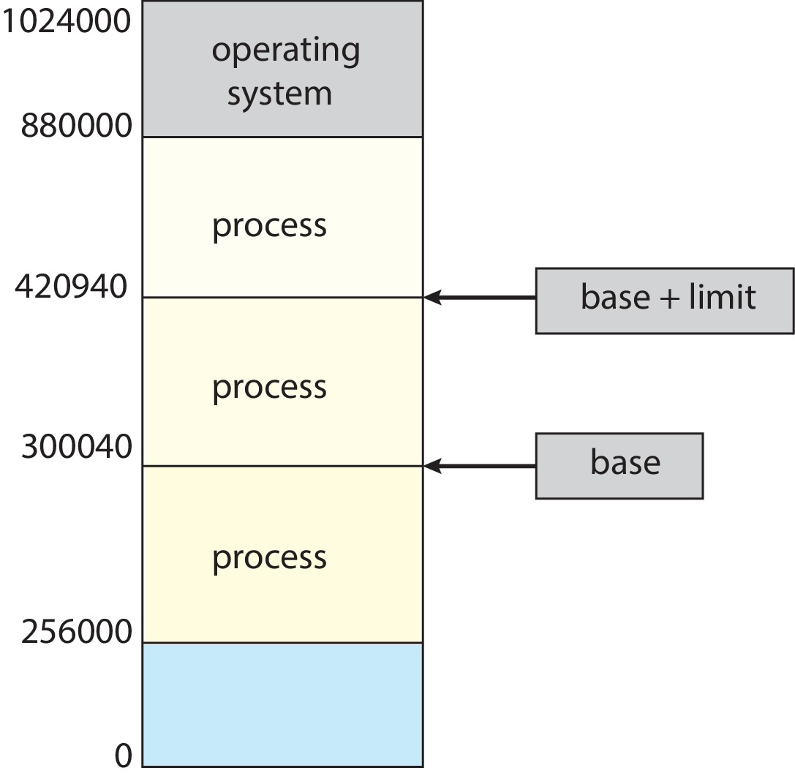
Hocanın kritik uyarısı sl. 4: "Keep two models distinct: checking a physical interval versus relocating an offset and checking its length. State which model an exercise uses."
| Model A: fiziksel aralık sl. 5 | Model B: offset + relocation sl. 9–10 | |
|---|---|---|
| Girdi | fiziksel adres | mantıksal offset |
| Denetim | base ≤ a < base + limit (iki karşılaştırma) | 0 ≤ o < limit (tek karşılaştırma) |
| Toplama | yok | denetimden sonra base + o |
| base 14000, limit 1000: son yasal | 14999 | offset 999 → 14999 |
| İlk yasak | 15000 | offset 1000 |

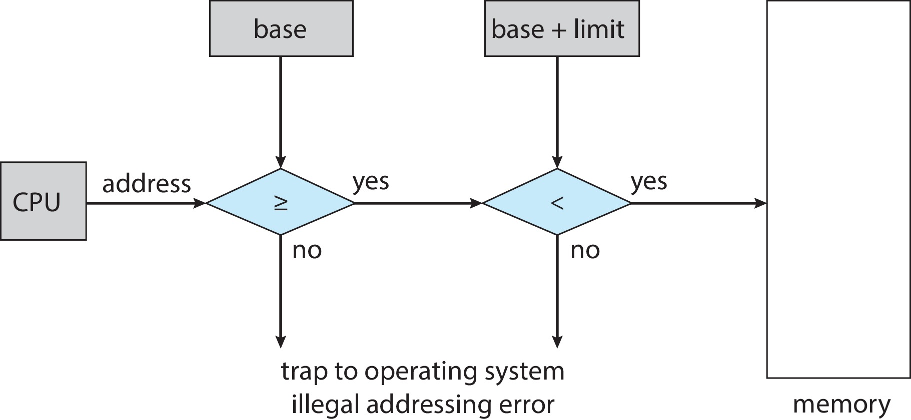
Mekanizma (Model A). Gelen adres zaten fiziksel. Donanım a ≥ base ve a < base + limit diye bakar. İkisi de doğruysa erişim belleğe gider, değilse OS'ye trap olur: adresleme hatası (addressing error). OSC: "CPU must check every memory access generated in user mode to be sure it is between base and limit for that user" OSC ch9 sl. 6. Hocanın örneği sl. 5: base 14000, limit 1000 → 14000 ve 14999 yasal, 15000 trap.
Ayrıcalık. "Only privileged code may change the protection registers. Otherwise the process could enlarge its own boundary." sl. 5 OSC de base ve limit yükleyen komutların ayrıcalıklı (privileged) olduğunu söyler OSC ch9 sl. 6. Context switch'te dispatcher yeni sürecin değerlerini yükler ek bilgi.
Tuzaklar.
- Üst sınır dışlayıcıdır (exclusive): base + limit adresi yasak.
<yerine≤yazmak bir baytlık hatadır. - Model A'da gelen adres fizikseldir. Ona base eklemek çift toplama (double addition) hatasıdır. "Mixing the physical-interval model with the offset model is a common source of off-by-one and double-addition errors." Okuma §3
Kontrol sorusu K1. Base 14000, limit 1000. (a) Model A'da fiziksel 14999 ve 15000 için sonuç ne? (b) Model B'de offset 999 ve 1000 için sonuç ne? (c) Bir sınav sorusunda hangi modelin kullanıldığını nereden anlarsın?
2. Adres bağlama, MMU ve relocation sl. 6–11#
2.1 Adres program hazırlığında değişir sl. 6–7; OSC ch9 sl. 7–9#
Sezgi. Kaynak kodda adres yoktur, isim vardır (x, f()). Derleyici, linker, loader ve donanım bu ismi adım adım bir yere bağlar. "Nerede?" sorusunun hangi aşamada kesinleştiği, programın sonradan taşınıp taşınamayacağını belirler.
Adresin yaşam döngüsü OSC ch9 sl. 7: kaynak kodda sembolik (symbolic) → derleyici yeniden yerleştirilebilir (relocatable) adrese bağlar ("14 bytes from beginning of this module") → linker ya da loader mutlak (absolute) adrese bağlar ("74014"). "Each binding maps one address space to another."
Üç bağlama zamanı (address binding) sl. 6; OSC ch9 sl. 8:
| Zaman | Ne olur | Sonuç |
|---|---|---|
| Compile time | Yer biliniyorsa absolute code üretilir | Başlangıç yeri değişirse yeniden derlemek gerekir |
| Load time | Yer bilinmiyorsa relocatable code üretilir; loader yerleştirir | Yer yüklemede sabitlenir; çalışırken taşınamaz |
| Execution time | Bağlama çalışma anına ertelenir | Süreç çalışırken taşınabilir; donanım desteği (MMU) gerekir |
Hoca sl. 6: "Relocation requires agreement between the executable, loader and hardware. A program's virtual address is not a direct statement of its RAM location." Okuma bunu daha da daraltır: bunlar kavramsal seçeneklerdir, "not a claim that a contemporary executable performs only one kind of address resolution throughout its life" Okuma §2.

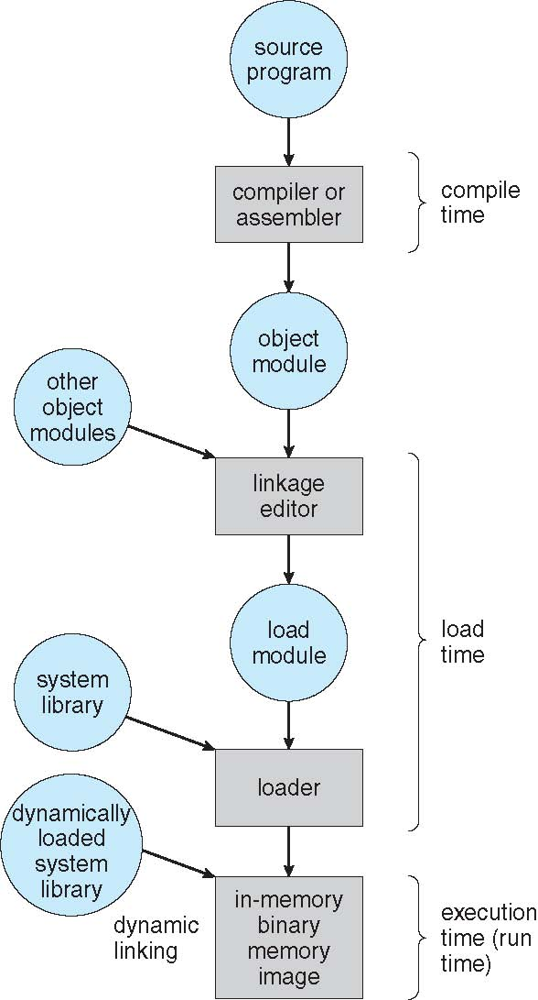
Hoca bu şekil için sl. 7: "The diagram describes a conceptual toolchain. Runtime address translation is still needed after the program has been loaded." Okumanın sorusu: başarılı link her değişkenin fiziksel adresini ortaya koyar mı? Hayır. "A linked address and a physical RAM address belong to different stages of the explanation." Okuma §2
2.2 Logical ve physical adres, MMU sl. 8; OSC ch9 sl. 10–11#
- "A virtual (logical) address is generated in the process's address space. A physical address selects a location after translation." sl. 8
- "The memory-management unit performs the mapping. The OS maintains the mapping data and handles exceptional cases." sl. 8
- OSC: logical adres "generated by the CPU; also referred to as virtual address", physical adres "address seen by the memory unit" OSC ch9 sl. 10.
- OSC'nin klasik cümlesi: compile-time ve load-time bağlamada logical ve physical adres aynıdır; execution-time bağlamada farklıdır OSC ch9 sl. 10. Hoca bunu slayta almamış, ama sınavda işe yarar.

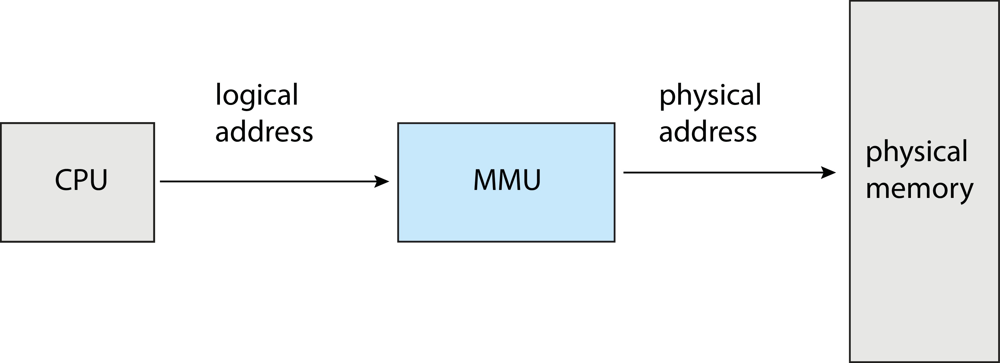
2.3 Execution-time relocation: önce limit, sonra base sl. 9–10; OSC ch9 sl. 12–13, 17–18#
Sezgi. Süreç hep 0'dan başlayan offset'lerle konuşsun. Donanım her erişimde bu offset'e sürecin o anki fiziksel başlangıcını eklesin. Süreç taşınırsa yalnızca bir register değişir.
Tanım. Base register burada relocation register adını alır. "The value in the relocation register is added to every address generated by a user process at the time it is sent to memory." Süreç gerçek fiziksel adresi hiç görmez OSC ch9 sl. 12–13. Hoca: "In the simple relocation model, physical address = base + logical offset." sl. 9
Mekanizma (Model B), adım adım sl. 10:
- CPU mantıksal offset
oüretir. - Donanım
o < limitmi diye bakar (offset negatif değildir). - Hayır → trap: addressing error. Fiziksel adres üretilmez.
- Evet → fiziksel = relocation +
o; erişim belleğe gider.
Slaytın başlığı kuralın kendisi: "Check the limit before adding the base." "For this offset model, require 0 ≤ offset < limit. Only then compute base + offset." sl. 10 Gerekçe: "Relocation without a bound would translate an out-of-range reference into someone else's memory." sl. 10

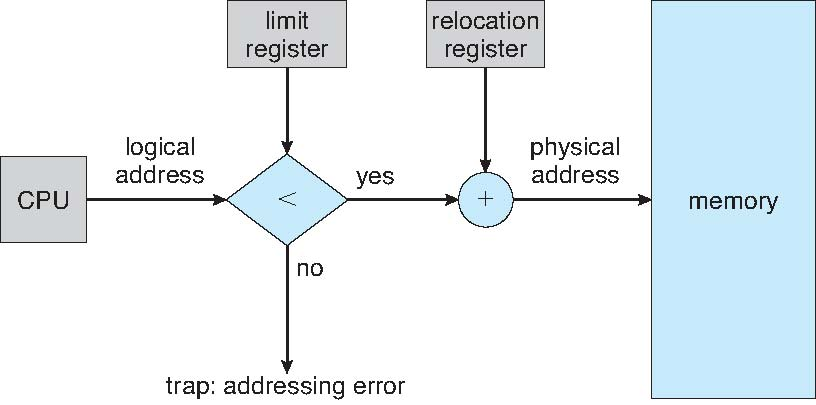
İz (base 14000, limit 1000) sl. 9–10; Okuma §3:
| Offset | o < 1000? |
Sonuç |
|---|---|---|
| 0 | ✓ | 14000 |
| 346 | ✓ | 14346 sl. 9 |
| 999 | ✓ | 14999 |
| 1000 | ✗ | trap, fiziksel sonuç yok sl. 10 |
Okumanın sorusu: offset 1000, fiziksel 15000 baytı var diye 15000 olabilir mi? Hayır. "Existence in physical memory does not establish permission for this process." Okuma §3
Taşıma. "Moving the region changes the base, not every address expression in the program." sl. 9 Bölge 14000'den 20000'e taşınırsa OS baytları kopyalar ve relocation'ı 20000 yapar. Offset 346 artık 20346'ya gider; programdaki hiçbir adres değişmez (sayılar ek bilgi, mantık sl. 9).

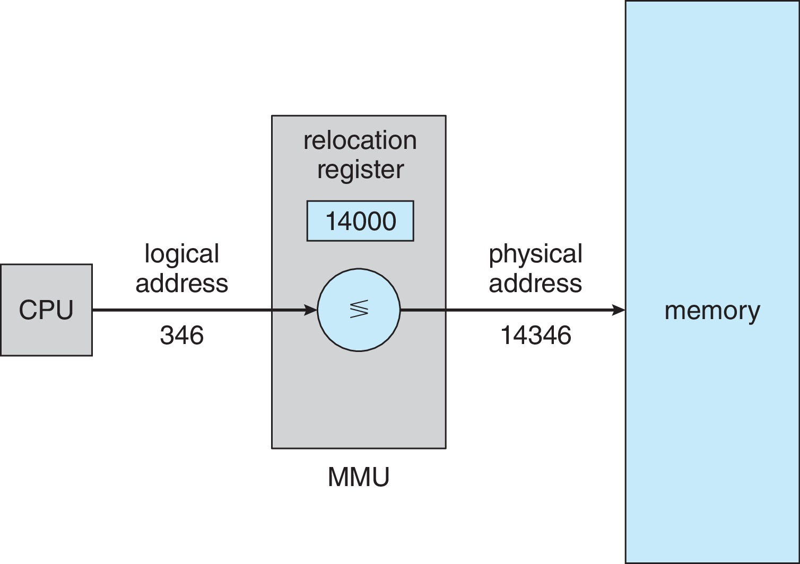
Linux'ta nasıl görünür? Bugünkü Linux süreçleri base/limit ile değil paging ile çevrilir. Ama address-view iki kez çalıştırılınca adreslerin değişmesi (ASLR) aynı fikri gösterir: programın kodu değişmez, yükleme yeri değişir ek bilgi; deney Ek'te.
Tuzaklar.
- "Linker adres verdi, demek ki o RAM adresi" yanlış sl. 6; Okuma §2.
- Load-time bağlama ile execution-time bağlamayı karıştırmak. Load-time'da yer yüklemede donar. Execution-time'da çeviri her erişimde yapıldığı için süreç taşınabilir.
- Model B'de önce toplayıp sonra "base + limit'ten küçük mü" diye bakmak, taşma (wrap-around) yoksa aynı yasal kümeyi verir ek bilgi. Ama hocanın offset modelindeki kural "check first, then add". Sınavda bu sırayı yaz.
2.4 Dynamic loading ve dynamic linking sl. 11; OSC ch9 sl. 14–15#
Hoca sl. 11:
- "Dynamic loading delays loading a routine until it is needed. Dynamic linking resolves library references at run time."
- "They address different questions: which code is loaded, and how references to separately supplied code are connected."
- "Shared libraries can reduce duplicate code storage. Mapping, permissions and per-process writable state still matter."
- "These ideas do not imply that all pages must remain in RAM; demand paging is developed in Week 6."
| Dynamic loading | Dynamic linking | |
|---|---|---|
| Soru | Hangi kod ne zaman yüklenir? | Ayrı verilen koda referans nasıl bağlanır? |
| Mekanizma | Rutin çağrılana kadar yüklenmez; diskte relocatable biçimde durur | Linking çalışma anına ertelenir; stub rutini bulur, kendini rutinin adresiyle değiştirir ve rutini çalıştırır |
| OS desteği | "No special support from the operating system is required"; program tasarımıyla yapılır | Gerekir: OS rutinin sürecin adres uzayında olup olmadığına bakar, yoksa ekler |
| Kaynak | OSC ch9 sl. 14 | OSC ch9 sl. 15 |
OSC'nin dynamic loading slaytında "The entire program does need to be in memory to execute" yazıyor. Cümle belirsiz: ya dynamic loading'in kaldırdığı eski kısıtı anlatıyor ya da "not" eksik. Doğru içerik: dynamic loading ile bütün programın bellekte olması gerekmez.
Linux'ta nasıl görünür? ek bilgi Dynamic linking: ld.so, PLT/GOT ile tembel bağlama (lazy binding). Stub fikrinin modern hâli PLT girdisidir. Dynamic loading: dlopen() ve dlsym(). /proc/PID/maps'te libc.so.6'nın kod bölgesi r-xp, yazılabilir verisi rw-p görünür. Hocanın "per-process writable state" dediği budur.
Tuzaklar.
- "Dynamic loading = dynamic linking" yanlış. "A program can use either idea without making them synonymous." Okuma §2
- "Paylaşılan kütüphane her şeyi paylaşır" yanlış: kod paylaşılır, yazılabilir durum süreç başınadır sl. 11.
Kontrol sorusu K2. Base 20000, limit 500 olan bir süreç offset 499 ve 500 üretiyor. Her biri için donanımın adımlarını sırayla yaz. Neden toplama karşılaştırmadan önce yapılmamalı?
Kontrol sorusu K3. "Program dynamic linking kullanıyor, o hâlde bütün kütüphane rutinleri ilk çağrıdan önce belleğe yüklenmiş olmalı." Bu cümlede hangi iki kavram karışmış?
3. Contiguous allocation, yerleştirme politikaları ve parçalanma sl. 12–17#
3.1 Bitişik tahsis ve hole'lar sl. 12; OSC ch9 sl. 16–19#
Sezgi. Her süreç fiziksel bellekte tek parça bir aralık ister. Süreçler gelip gittikçe arada boşluklar (hole) kalır. Yeni gelen süreç tek bir yeterli boşluğa sığmak zorundadır.
Hoca sl. 12:
- "In this model each process occupies one continuous physical region. Exiting processes leave holes; adjacent free holes can merge."
- "A request needs one sufficiently large hole. Adding all free bytes is not enough to decide whether it fits."
OSC'de bu "variable partition" modelidir. OS hem tahsisli bölümleri hem hole'ları izler. Çıkan sürecin bölümü boşalır ve komşu boş bölümlerle birleştirilir (coalescing) OSC ch9 sl. 19.

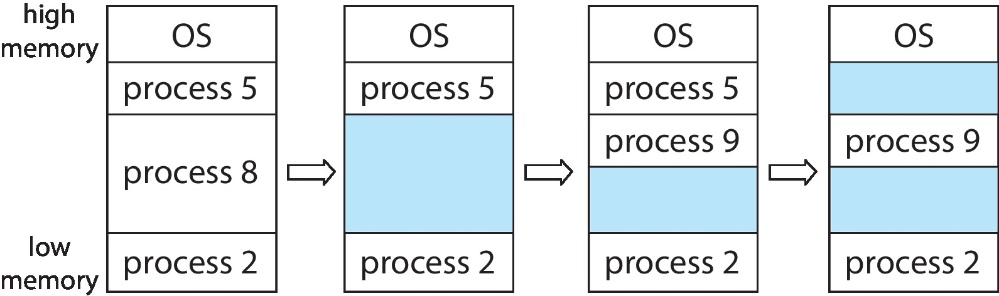
3.2 First, best ve worst fit sl. 13–14; Okuma §4; OSC ch9 sl. 20#
Tanım sl. 13: "First fit searches in address order and chooses the first sufficient hole. Best fit chooses the smallest sufficient hole; worst fit chooses the largest."
OSC ekler OSC ch9 sl. 20: best fit ve worst fit listenin tamamını taramak zorundadır (liste boyuta göre sıralı değilse). Best fit en küçük artığı, worst fit en büyük artığı bırakır. "First-fit and best-fit better than worst-fit in terms of speed and storage utilization."
Hocanın iki uyarısı sl. 13:
- "State the search order, tie rule, splitting and coalescing assumptions before comparing results."
- "A choice that looks economical for one request can make later requests harder."
Alıştırma sl. 14. Hole'lar adres sırasıyla 100, 500, 200, 300, 600 KiB (toplam 1700). İstekler sırayla 212, 417, 112, 426 KiB (toplam 1167). Varsayımlar: seçilen hole bölünür, artığı aynı yerde hole olarak kalır; hiçbir süreç çıkmaz, yani coalescing yok; first fit her istekte baştan arar. Bu dizide hiçbir adımda eşit boyutlu iki aday çıkmadığı için eşitlik (tie) kuralı sonucu değiştirmez.
First fit:
| İstek | Tarama | Seçilen | Hole listesi sonra | Toplam boş |
|---|---|---|---|---|
| 212 | 100 ✗, 500 ✓ | 500 → 288 | 100, 288, 200, 300, 600 | 1488 |
| 417 | 100, 288, 200, 300 ✗; 600 ✓ | 600 → 183 | 100, 288, 200, 300, 183 | 1071 |
| 112 | 100 ✗, 288 ✓ | 288 → 176 | 100, 176, 200, 300, 183 | 959 |
| 426 | en büyük 300 | cannot fit | değişmez | 959 |
Best fit:
| İstek | Yeterli adaylar | Seçilen | Hole listesi sonra | Toplam boş |
|---|---|---|---|---|
| 212 | 500, 300, 600 | 300 → 88 | 100, 500, 200, 88, 600 | 1488 |
| 417 | 500, 600 | 500 → 83 | 100, 83, 200, 88, 600 | 1071 |
| 112 | 200, 600 | 200 → 88 | 100, 83, 88, 88, 600 | 959 |
| 426 | 600 | 600 → 174 | 100, 83, 88, 88, 174 | 533 |
Worst fit:
| İstek | Seçilen (en büyük) | Hole listesi sonra | Toplam boş |
|---|---|---|---|
| 212 | 600 → 388 | 100, 500, 200, 300, 388 | 1488 |
| 417 | 500 → 83 | 100, 83, 200, 300, 388 | 1071 |
| 112 | 388 → 276 | 100, 83, 200, 300, 276 | 959 |
| 426 | en büyük 300 | cannot fit | 959 |
Sonuçlar hocanın tablosuyla aynı sl. 14. Korunum denetimi (conservation check): best fit'te 1700 − 1167 = 533, son hole'ların toplamı da 100 + 83 + 88 + 88 + 174 = 533. "This independent conservation check helps catch arithmetic mistakes." Okuma §4
Yorum. Best fit bu dizide kazanır, çünkü 600'lük hole'u son büyük istek için korur. Worst fit büyük hole'u ilk istekte, first fit ikinci istekte harcar. Ama: "Best fit succeeds for this particular sequence. That observation is an example outcome, not a proof that best fit dominates every possible workload." Okuma §4
Karşı örnek ek bilgi: hole'lar 20, 15; istekler 10, 10, 15. First fit: 10 → 20'den (10, 15 kalır), 10 → kalan 10'dan (0, 15), 15 → 15'ten. Hepsi sığar. Best fit: 10 → 15'ten (20, 5), 10 → 20'den (10, 5), 15 → sığmaz. Best fit'in bıraktığı küçük kırıntılar (burada 5, alıştırmada 83 ve 88) sonraki isteklere yetmez.
Tuzaklar.
- First fit'te adres sırasıyla boyut sırasını karıştırmak.
- Bölünen hole'un artığını listenin sonuna eklemek. Artık yerinde kalır ve first fit sırayı kullanır.
- Next fit (son tahsisin bittiği yerden devam) farklı sonuç verir: bu alıştırmada 112'yi 183'lük hole'dan alır ek bilgi. Arama sırasını söylemek bu yüzden şarttır.
3.3 Dış ve iç parçalanma sl. 15; Okuma §5; OSC ch9 sl. 21#
Tanımlar, hocanın kelimeleriyle sl. 15:
- "External fragmentation: enough total free space exists, but no single hole can satisfy the contiguous request."
- "Internal fragmentation: a reserved allocation unit contains bytes not needed by that allocation."
- "After first fit in the exercise, 959 KiB remains free, but the largest hole is only 300 KiB. The 426 KiB request fails."
- "The distinctions depend on the allocation unit and model; describe what is being wasted."
Okuma bunu şöyle özetler: dış parçalanma boş bölgelerin nasıl dizildiğiyle ilgilidir; iç parçalanma ayrılmış bir birimin içindeki kullanılmayan alanla ilgilidir Okuma §5.
| Model | Dış parçalanma | İç parçalanma |
|---|---|---|
| Bitişik değişken bölüm | var (asıl sorun) | küçük, ayırma birimi ya da hizalama varsa |
| Segmentation | var: segmentler değişken boyutlu sl. 19 | az |
| Paging | sürecin yerleşimi için yok sl. 16 | son sayfada var sl. 29 |
50-percent rule (yalnız OSC'de, hocanın slaytında yok): first fit analizine göre N blok tahsis edildiğinde 0.5N blok parçalanmaya gider; toplam 1.5N'nin 1/3'ü kullanılamaz olabilir OSC ch9 sl. 21. İstatistiksel bir sonuçtur, her iş yükü için yasa değildir.
3.4 Compaction ve maliyeti sl. 16–17; OSC ch9 sl. 22#
Hoca sl. 16–17:
- "Compaction moves allocated regions together to consolidate free space. It requires movable addresses and safe coordination with references."
- "Copying data costs time. Pending I/O and pointers understood outside the relocation mechanism complicate movement."
- "Paging changes the allocation unit: a process can use separated frames instead of requiring one contiguous physical region."
- "This removes the contiguous-process placement problem; it does not make every kind of fragmentation disappear."
- "Compaction relocates allocations; it does not remove unused space inside an allocation."

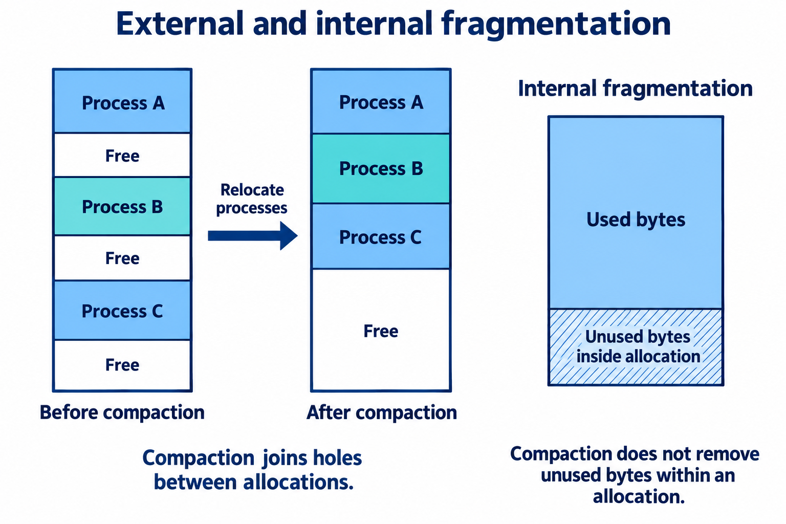
Mekanizma.
- Taşınacak bölgeleri seç.
- Baytları yeni yere kopyala. Maliyet kopyalanan bayt sayısıyla orantılıdır.
- Taşınan her sürecin relocation register'ını güncelle. Programdaki adresler değişmez sl. 9.
- Bekleyen I/O eski fiziksel adresi kullanıyorsa sorun çıkar. OSC iki çözüm verir: süreci I/O bitene kadar bellekte kilitle (latch) ya da I/O'yu yalnız OS tamponlarına yap OSC ch9 sl. 22.
OSC'nin ön koşulu: "Compaction is possible only if relocation is dynamic, and is done at execution time." OSC ch9 sl. 22 Okuma da uyarır: "'Move the process' is therefore a policy idea with implementation obligations, not a cost-free diagram operation." Okuma §5
Sayısal düşünce ek bilgi: first fit sonrası hole'lar 100, 176, 200, 300, 183. Komşu iki hole 200 ile 300'ün arasındaki tahsisli bölgeyi kaydırmak 500 KiB'lık tek hole üretir; 426 için tam compaction gerekmez.
Tuzaklar.
- "Compaction iç parçalanmayı da giderir" yanlış sl. 17.
- "Paging bütün parçalanmayı yok eder" yanlış sl. 16. OSC "avoids external fragmentation" der OSC ch9 sl. 23. Hoca daraltır: sürecin bitişik yerleşim sorunu kalkar; son sayfanın iç parçalanması kalır ve başka sistem tahsisleri hâlâ bitişik bölge isteyebilir Okuma §5. Sınavda hocanın daraltılmış ifadesini kullan.
Kontrol sorusu K4. Hole'lar adres sırasıyla 150, 350, 300 KiB. İstekler 300, 200, 150. First, best ve worst fit için her adımda hole listesini yaz. Hangisi bütün istekleri karşılar?
Kontrol sorusu K5. "Sistemde 959 KiB boş var ama 426 KiB'lık istek reddedildi." Bu hangi parçalanma? Compaction çözer mi, çözmek için hangi ön koşul gerekir?
4. Segmentation sl. 18–19; Okuma §6#
4.1 Mantıksal bölgeler sl. 18#
Sezgi. Programcı belleği tek bir dizi olarak düşünmez. Kod, yığın (stack), sembol tablosu, ana program, sqrt alt programı gibi mantıksal bölgeler düşünür. Segmentation bu görüşü donanıma taşır: her bölge kendi boyutunda bir segmenttir.
Tanım sl. 18:
- "A segment is a variable-sized logical region, such as code, a stack or a table. An address is (segment number, offset)."
- "A segment-table entry supplies a base, length and permissions. Check the offset against the length, then add the base."
- "The historical hardware model is not a claim about every current Linux process."
Mekanizma.
- CPU (s, d) üretir.
- s, segment tablosundan bir girdi seçer: base, limit (length), izinler.
d < limitmi? Hayır → trap (addressing error).- Evet → fiziksel = base + d.
Bu, §2.3'teki "önce limit, sonra base" kuralının segment başına uygulanmasıdır.

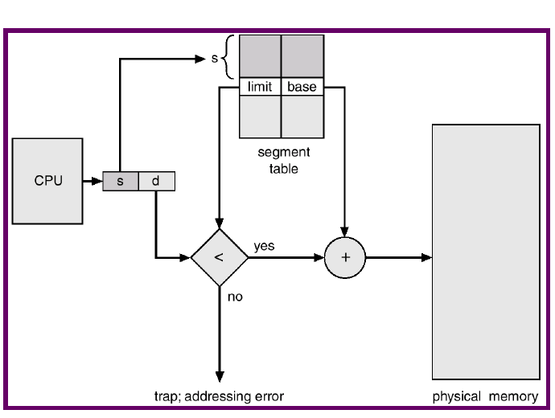
ek bilgi, OSC 9. baskı Segment tablosunun yeri STBR (segment-table base register), segment sayısı STLR (segment-table length register) register'ındadır. s ≥ STLR ise segment yoktur, trap. Yani iki denetim vardır: segment var mı (s < STLR), offset segmentin içinde mi (d < limit[s]). Hocanın slaytı yalnız ikincisini açıkça yazar.
4.2 Segment tablosu hesabı sl. 19#

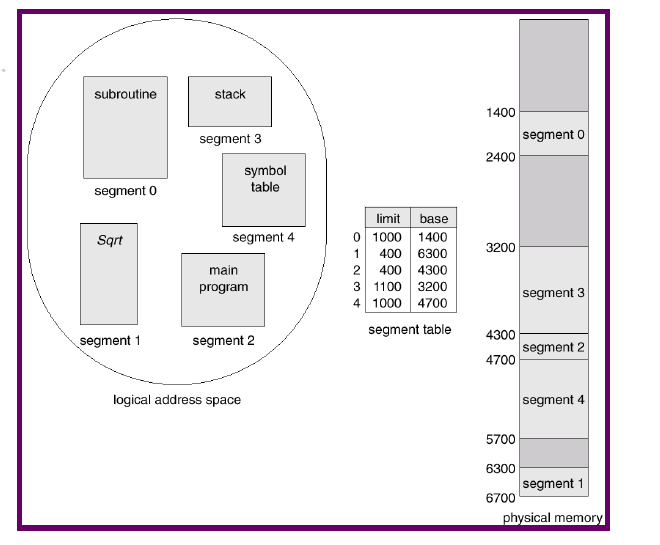
| s | limit | base | Fiziksel aralık [base, base + limit) | İçerik |
|---|---|---|---|---|
| 0 | 1000 | 1400 | [1400, 2400) | subroutine |
| 1 | 400 | 6300 | [6300, 6700) | sqrt |
| 2 | 400 | 4300 | [4300, 4700) | main program |
| 3 | 1100 | 3200 | [3200, 4300) | stack |
| 4 | 1000 | 4700 | [4700, 5700) | symbol table |
Hocanın sorduğu üç adres sl. 19:
| (s, d) | d < limit[s]? |
Sonuç |
|---|---|---|
| (0, 430) | 430 < 1000 ✓ | 1400 + 430 = 1830 |
| (1, 399) | 399 < 400 ✓ | 6300 + 399 = 6699 |
| (1, 400) | 400 < 400 ✗ | trap |
Hoca: "(1, 400) is illegal even if physical byte 6700 exists." sl. 19 Okuma: "The existence of physical byte 6700 is irrelevant to whether that segment permits the reference." Okuma §6
Aynı tabloda ek alıştırmalar ek bilgi; ilk üçü OSC kitabındaki klasik örnek:
| (s, d) | Sonuç | Not |
|---|---|---|
| (2, 53) | 4300 + 53 = 4353 | |
| (3, 852) | 3200 + 852 = 4052 | |
| (0, 1222) | trap | 1222 ≥ 1000 |
| (3, 1100) | trap | Denetim olmasa 3200 + 1100 = 4300 olurdu: segment 2'nin (main program) ilk baytı |
Son satır, hocanın "relocation without a bound would translate an out-of-range reference into someone else's memory" uyarısının segment hâlidir sl. 10.
Şekilde [2400, 3200) = 800 ve [5700, 6300) = 600 boş görünür. Toplam 1400 boş var ama 1000'lik yeni bir segment en büyük boşluk 800 olduğu için sığmaz. "Variable lengths match logical regions but can produce external fragmentation. Paging uses fixed-sized allocation units." sl. 19
Linux'ta nasıl görünür? ek bilgi x86-64 Linux düz (flat) segment modeli kullanır: CS, DS, SS tabanları 0 sayılır, limit denetimi yapılmaz. FS ve GS tabanları thread-local storage için kullanılır. Bu yüzden hoca "historical hardware model" diyor. IA-32 segmentation §9'da.
Tuzaklar.
- Base'i ekleyip fiziksel adresi limitle karşılaştırmak yanlış. (0, 430) → 1830; 1830 < 1000 değil ama erişim yasal. Limit offset ile karşılaştırılır.
- "Bir C dizisi = bir segment ya da bir sayfa" yanlış. Dizi birkaç sayfaya yayılabilir, başka nesnelerle aynı sayfayı paylaşabilir Okuma §6.
Kontrol sorusu K6. Aynı tabloda (4, 999), (4, 1000) ve (2, 399) için sonuç ne? (4, 1000)'de limit denetimi olmasaydı erişim hangi fiziksel adrese, hangi bölgeye düşerdi?
5. Paging: page, frame ve adres çevirisi sl. 20–31#
5.1 Page ve frame sl. 20; Okuma §7; OSC ch9 sl. 23, 26#
Sezgi. Contiguous allocation'da süreç tek ve büyük bir hole ister. Paging ayırma birimini değiştirir: sanal uzay sabit boyutlu sayfalara (page), fiziksel bellek aynı boyutta çerçevelere (frame) bölünür. Her sayfa herhangi bir boş çerçeveye konabilir. Süreç kendi sanal uzayını sıralı görür; çerçeveler RAM'de dağınık olabilir.
Hoca sl. 20:
- "Divide the virtual address space into pages and physical memory into frames of the same size."
- "A page table records which frame backs each mapped virtual page. Consecutive virtual pages need not occupy consecutive frames."
- "Within a page, byte order and the offset are preserved."

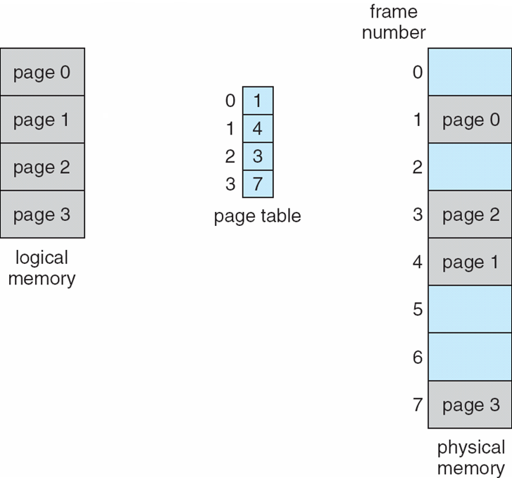
Terimler: sayfa numarası p (VPN, virtual page number), sayfa içi konum d (offset), çerçeve numarası f (PFN, physical frame number) OSC ch9 sl. 24; OSTEP 18.1. OSC'ye göre sayfa boyutu 2'nin kuvvetidir, 512 bayt ile 16 MB arasında OSC ch9 sl. 23.
5.2 Çeviri yolu ve bit alanları sl. 21–22, 71; OSC ch9 sl. 24–25#
İki eşdeğer yol.
- Bölme yolu sl. 21: "For page size P: p = floor(A/P), d = A mod P, physical address = f × P + d." Ardından: "Validate the mapping and access permissions before using the result."
- Bit yolu sl. 71: "For a 2^m-byte address space and 2^n-byte pages, p has m−n bits and d has n bits." O zaman
p = A >> n,d = A & (2^n − 1),PA = (f << n) | dOSTEP 18.4.
İki yol aynıdır: >> n = ⌊A / 2^n⌋, & (2^n − 1) = A mod 2^n. d < 2^n olduğu için OR ile toplama aynı sonucu verir.

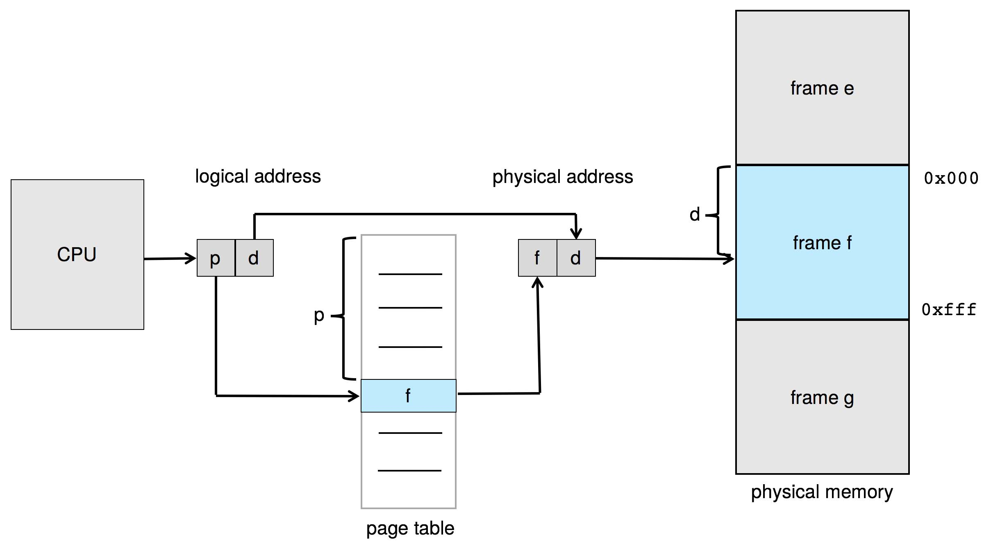
Birimler sl. 22:
- "With a 32-bit virtual address and 4 KiB pages, the offset uses 12 bits and the virtual page number uses 20 bits."
- "4 KiB = 4096 bytes = 2^12 bytes. The low 12 bits survive translation unchanged."
- "The number of frame-number bits depends on the physical address width. It need not equal the number of virtual-page bits."
- "Write addresses in bytes and label KiB, MiB and hexadecimal notation explicitly."
Örnek ek bilgi: 32 bit sanal adres, 4 KiB sayfa, 1 GiB RAM. VPN 20 bit, çerçeve numarası 30 − 12 = 18 bit.
Hex kısayolu. n, 4'ün katıysa offset son n/4 hex hanedir. 4 KiB'ta (n = 12) son 3 hex hane offset, geri kalanı VPN'dir: 0x1234 → p = 0x1, d = 0x234. n 4'ün katı değilse (1 KiB → n = 10, 2 KiB → n = 11) kısayol çalışmaz; ikiliye açmak gerekir. Örnek: 1 KiB sayfada 0x2ABC = 0010 10|10 1011 1100 → p = 001010 = 10, d = 10 1011 1100 = 0x2BC = 700. Son üç hex hane "ABC" offset değildir ek bilgi.
KiB ile KB'yi karıştırma: KiB = 1024 bayt, KB = 1000 bayt. OSC "4 KB" yazar ama 4096'yı kasteder. Hoca KiB yazar.
5.3 Hocanın 4 KiB tablosu: 0x1234, sayfa sınırı, geçersiz adres sl. 23–28; Okuma §8#
Mini örnek sl. 23; OSC ch9 sl. 27: 4 baytlık sayfa, 16 baytlık sanal uzay, 32 baytlık fiziksel bellek. Tablo: 0→5, 1→6, 2→1, 3→2. "Virtual address 6 is page 1, offset 2. Its physical address is 6 × 4 + 2 = 26." sl. 23 Dikkat: buradaki 6 frame 6'dır; VA 6 ile tesadüfen aynı sayı Okuma §8.

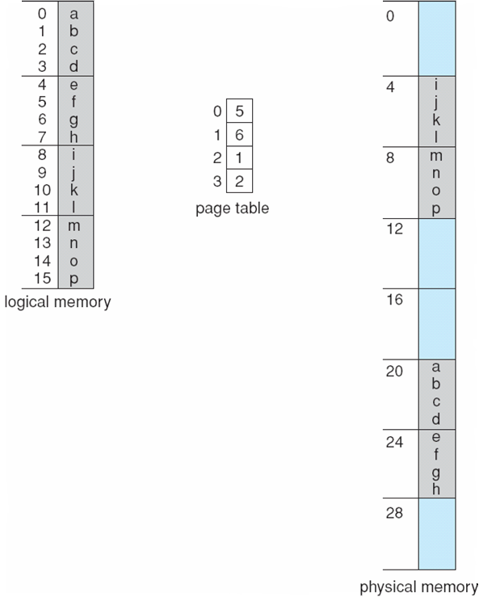
Çalışma tablosu sl. 24. Eşlenmiş her sayfa bellekte (resident):
| Virtual page | Frame | Durum |
|---|---|---|
| 0 | 3 | read/write |
| 1 | 9 | read-only |
| 2 | — | unmapped |
| 3 | 1 | read/write |
0x1234 okuması, iki yoldan sl. 25–26:
Bölme yolu (hocanınki): 0x1234 = 1·4096 + 2·256 + 3·16 + 4 = 4660. 4660 / 4096 → p = 1, kalan 564 = 0x234. Frame 9'un tabanı 9 × 4096 = 36864 = 0x9000. PA = 36864 + 564 = 37428 = 0x9234.
Bit yolu: 0x1234 = 0001 | 0010 0011 0100. d = 0x1234 & 0xFFF = 0x234. p = 0x1234 >> 12 = 1. f = 9. PA = (9 << 12) | 0x234 = 0x9234.
İzin: okuma serbest. "A write to the same virtual address is rejected by the read-only permission." sl. 25 Sl. 26'nın başlığı özetin kendisi: "The page changes; the offset stays."

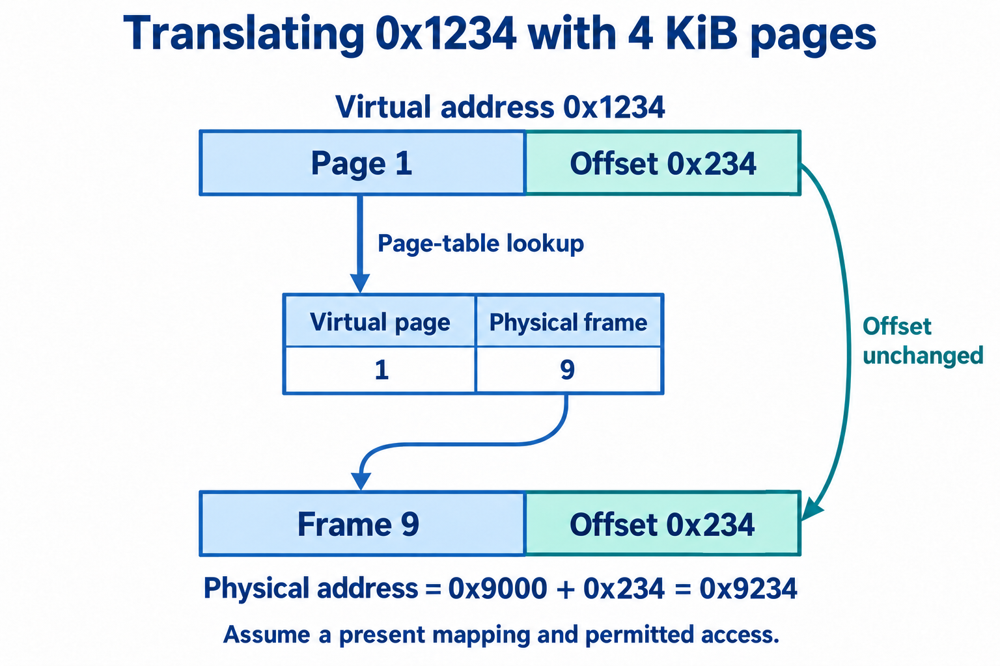
Sayfa sınırı süreksizdir sl. 27:
- 0x0FFF → p 0, d 4095 → frame 3 → 0x3FFF.
- 0x1000 → p 1, d 0 → frame 9 → 0x9000.
- "Virtual adjacency does not imply physical adjacency across a page boundary."
- "A multi-byte access crossing a boundary may require two translations and checks." Örnek: 0x0FFE'den 4 baytlık yazma iki sayfaya değer. Sayfa 0 yazılabilir, sayfa 1 salt okunur; erişim reddedilir ek bilgi.
Geçersiz referansı açıkça reddet sl. 28:
- "Virtual 0x2000 names unmapped page 2 in our table. There is no physical result to invent."
- "A read-only mapping can translate a read but reject a write. Mapping existence and permitted access are separate checks."
- "A valid virtual page that is temporarily nonresident is another situation. Week 6 explains how a fault handler may make it resident."
Üç ayrı durum var:
| Durum | Soru | Örnek | Diskten yüklemek düzeltir mi? |
|---|---|---|---|
| Unmapped (invalid) | Adres sürecin uzayında mı? | R 0x2000 | Hayır |
| Protection | Bu işlem bu eşlemede izinli mi? | W 0x1234 | Hayır |
| Nonresident | Geçerli ama şu an bellekte mi? | (Hafta 6) | Evet, fault handler yükler |
"Must every page-table rejection lead to loading a page from disk? No. An illegal address or a prohibited write does not become legal by loading data." Okuma §8
Okumanın özet tablosu Okuma §8:
| Erişim | p / d | Sonuç |
|---|---|---|
| R 0x0FFF | 0 / 4095 | 0x3FFF |
| R 0x1000 | 1 / 0 | 0x9000 |
| R 0x1234 | 1 / 564 | 0x9234 |
| W 0x1234 | 1 / 564 | protection reddi |
| R 0x2000 | 2 / 0 | unmapped |
Tuzaklar.
- Çift sayma: frame tabanına bütün sanal adresi eklemek (0x9000 + 0x1234 = 0xA234) yanlış. "Do not add the original whole virtual address to the frame base: that would count the virtual-page contribution a second time." Okuma §7
- 8191 ve 8192 komşu baytlardır ama farklı sayfalardadır: 8191 → p 1, d 4095; 8192 → p 2, d 0 Okuma §7.
5.4 Son sayfanın israfı ve boş çerçeveler sl. 29–31; OSC ch9 sl. 23, 28–29#
Hesap sl. 29. Sayfa 2048 bayt, süreç 72766 bayt.
- 2048 × 35 = 71680 ≤ 72766 < 73728 = 2048 × 36 → 35 tam sayfa.
- Kalan: 72766 − 71680 = 1086 bayt → 36. sayfa.
- Ayrılan: 36 × 2048 = 73728 bayt.
- İç parçalanma: 2048 − 1086 = 962 bayt. Denetim: 73728 − 72766 = 962.
Hocanın uyarısı sl. 29: "The familiar half-page average assumes a suitable distribution of final-page occupancy; it is not a law for every workload." En kötü durum sayfa − 1 bayt, en iyi durum 0 ek bilgi.
Sayfayı küçültmek her zaman israfı azaltmaz ek bilgi: aynı 72766 bayt için sayfa 1024, 2048, 4096 ya da 8192 olsa da israf hep 962 bayttır, çünkü 73728 = 9 × 8192. Sayfa 512 olunca 450, 16384 olunca 9154 bayta değişir.
Boş çerçeveler sl. 30:
- "The OS selects free physical frames and records their assignment. The process sees an ordered virtual space even when the frames are scattered."
- "Frame availability is system-wide bookkeeping; a process's page table describes its own mappings."
- "A larger page can reduce table entries but increase unused space in partially occupied pages."

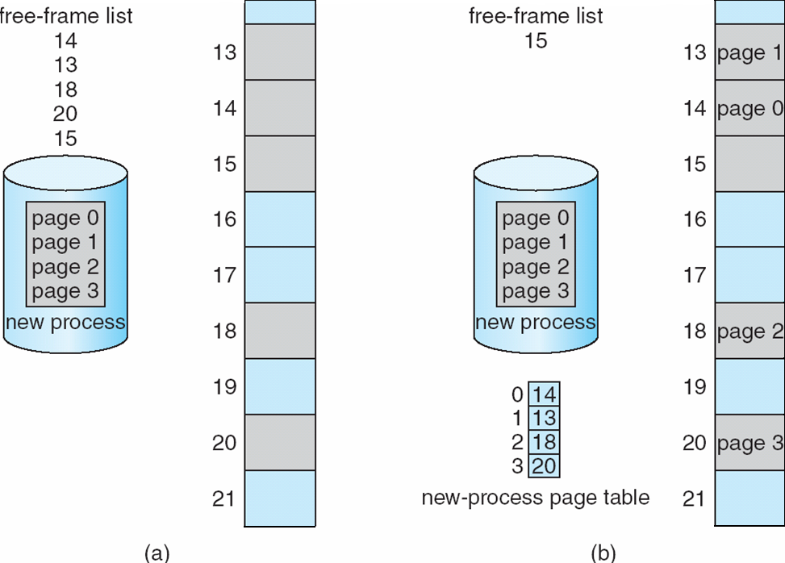
Yarı yol kontrolü sl. 31: "Why can two processes both use virtual address 0x1234? Their mappings can select different physical frames." Dersin sorusunun cevabı budur.
Linux'ta nasıl görünür? sysconf(_SC_PAGESIZE) ya da getconf PAGESIZE taban sayfa boyutunu verir. x86-64 Ubuntu'da 4096 beklenir (bu makinede doğrulanmadı). Bu makine (Apple M4, macOS) 16384 bildiriyor; aynı makinede Rosetta altında çalışan x86-64 programı 4096 görüyor [ölçüldü, macOS]. Hocanın 4096'sı bir modeldir; ölçülen değeri modelle değiştirme Okuma §16.
Kontrol sorusu K7. Aynı 4 KiB tabloyla R 0x3ABC, W 0x1010, R 0x1FFF ve W 0x2004 için p, d ve sonucu yaz. Hangisi unmapped, hangisi protection?
Kontrol sorusu K8. 16 bit sanal adres, 2 KiB sayfa. VA 0x5A3C'nin p ve d'si ne? Sayfa 11, frame 6'ya eşliyse fiziksel adres ne? Neden hex kısayolu burada çalışmaz?
6. Bellekteki sayfa tablosu ve TLB sl. 32–40#
6.1 Sayfa tablosu bellekte bir veri yapısıdır sl. 32; OSC ch9 sl. 30, 35#
Hoca sl. 32:
- "The page-table base register identifies the current table in a simple one-level model. A page-table entry stores a frame and metadata."
- "Without a translation cache, one data access requires a PTE read and then the requested memory access."
-
"A page table is not a second copy of the program. It records how to interpret addresses and what accesses are permitted."
-
PTBR (page-table base register): tablonun başını gösterir. Context switch'te değişir OSC ch9 sl. 30.
- PTLR (page-table length register): tablonun boyunu tutar. VPN ≥ PTLR ise trap. OSC bunu valid bitine alternatif ya da ek bir denetim olarak verir OSC ch9 sl. 35.
- Bu register'ları yalnızca ayrıcalıklı kod yükleyebilir; base/limit ile aynı mantık Okuma §1.
- OSC: "every data/instruction access requires two memory accesses" OSC ch9 sl. 30. Çözüm TLB'dir.
PTE bitleri OSC ch9 sl. 35; OSTEP 18.3:
| Bit | Anlamı |
|---|---|
| Frame number | çerçeve |
| Valid / invalid | bu derste: sayfa sürecin yasal mantıksal adres uzayında mı |
| Protection (R/W/X) | hangi işlemler izinli |
| User/supervisor | user mode erişebilir mi |
| Present | sayfa bellekte mi, diskte mi (Hafta 6) |
| Dirty | belleğe geldiğinden beri yazıldı mı |
| Reference / accessed | erişildi mi (yer değiştirme için) |
x86'da ayrı bir valid biti yoktur, yalnız P (present) vardır; P = 0 geçersiz de olabilir, diskte de. Hangisi olduğunu OS kendi yapılarından çözer OSTEP 18.3.
6.2 PTE'nin adresi sl. 33; Okuma §9#
"Assume a linear physical page table, PTBR = 0x8000 and each PTE occupies 8 bytes. For virtual page 1, PTE address = 0x8000 + 1 × 8 = 0x8008." sl. 33
Genel formül: PTE adresi = PTBR + VPN × PTE boyutu OSTEP 18.4.
Üç ayrı nicelik vardır; okuma hepsine ayrı ad koymayı ister Okuma §9:
| Nicelik | 0x1234 okuması için |
|---|---|
| PTE adresi (entry address) | 0x8000 + 1 × 8 = 0x8008 |
| PTE içeriği (entry contents) | frame 9, read-only, valid |
| Veri adresi (data address) | 0x9000 + 0x234 = 0x9234 |
Hoca: "That is where the mapping entry is stored; it is not the physical address of the requested data." "Keep the two addresses separate." sl. 33
Okumanın sorusu: sayfa 3'ün PTE'si nerede? 0x8000 + 3 × 8 = 0x8000 + 24 = 0x8000 + 0x18 = 0x8018 Okuma §9. Dikkat: 3 × 8 = 24 = 0x18; 0x24 değil. Hex çarpımda ondalık ile hex'i karıştırmak sık yapılan hatadır.
Erişim algoritması (TLB yokken) OSTEP 18.4:
- VPN = VA >> n.
- PTE adresi = PTBR + VPN × boyut. PTE'yi oku (1. bellek erişimi).
- Valid değilse → fault (unmapped).
- İzin yoksa → protection fault.
- PA = (PFN << n) | offset. Veriye eriş (2. bellek erişimi).
Sıra önemlidir: önce geçerlilik, sonra izin, en son fiziksel adres. Hocanın "validate … before using the result" sl. 21 dediği budur.
6.3 TLB: çeviri önbelleği sl. 34–35, 72; OSC ch9 sl. 30–33#
Sezgi. Her erişimde PTE okumak erişim süresini ikiye katlar. Programlar yerellik (locality) gösterir; aynı sayfalar tekrar tekrar kullanılır. Son çevirileri küçük ve hızlı bir donanım önbelleğinde tutmak bu yüzden işe yarar.
Tanım sl. 34:
- "The translation lookaside buffer stores recently useful address translations and associated metadata. It does not hold the program's data bytes."
- "A hit can supply the frame and permissions without a page-table walk. A miss requires looking up the mapping."
- "Data caches and TLBs solve different problems, even though both exploit locality."
TLB bir ilişkisel bellektir (associative memory): sayfa numaraları paralel aranır. "A matching entry supplies a frame number; the offset passes through unchanged." sl. 72 Girdisi VPN, PFN ve diğer bitlerden (valid, izin, ASID) oluşur. Tipik boyut 64–1024 girdi OSC ch9 sl. 31.

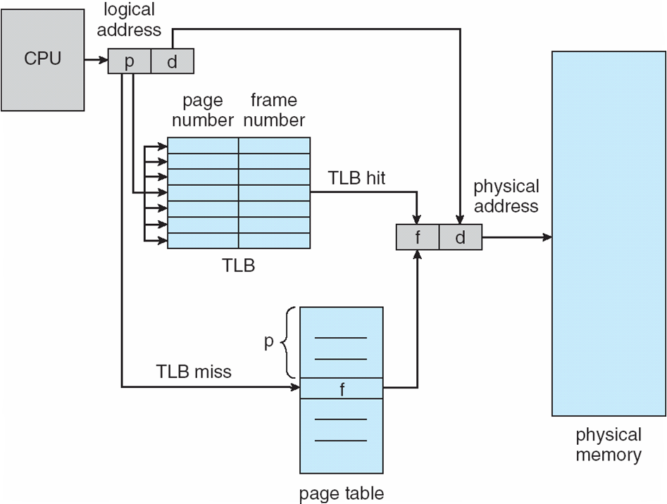
Mekanizma.
- VA'dan VPN'i çıkar, TLB'de ara.
- Hit: girdideki izinlerle denetle. İzin yoksa protection fault. Varsa PA = (PFN << n) | offset.
- Miss: sayfa tablosuna git. Geçersizse fault, izin yoksa protection fault. Uygunsa çeviriyi TLB'ye ekle (gerekirse birini çıkar) ve erişimi tamamla OSTEP 19.1.
Miss'i kim işler? "Whether hardware or software handles a TLB miss depends on the architecture. Do not assume every miss invokes the OS." sl. 35 x86'da donanım tabloyu kendisi yürür. MIPS gibi mimarilerde donanım bir istisna atar, OS trap handler'ı tabloya bakıp TLB'ye yazar ve hataya yol açan komutu yeniden çalıştırır OSTEP 19.3. Bazı girdiler kalıcı olarak sabitlenebilir (wired down) OSC ch9 sl. 31.
6.4 TLB miss page fault değildir sl. 35#
- "A missing cached translation can be recovered from a valid, resident page-table mapping. No disk access is required in that case."
- "A page fault is an exception associated with the attempted access, for example a nonresident page or a protection violation on relevant architectures."
- "Record translation-cache behavior separately from residency and permissions."
Dört bağımsız soru vardır: TLB'de mi? Geçerli mi? Bellekte mi? İzinli mi? Bir TLB miss sayfanın RAM'den atıldığı anlamına gelmez: "a miss may evict a cached translation without evicting the page's data from RAM" Okuma §10.
6.5 TLB izi sl. 36–37; Okuma §10#
Varsayımlar sl. 36: iki girdi, tamamen ilişkisel (fully associative), başta boş, LRU yer değiştirme, bütün sayfalar eşli ve bellekte. Referans dizisi 0, 1, 0, 2, 1. Gösterim: TLB içeriği soldan sağa LRU → MRU.
| Adım | Sayfa | Önce | Sonuç | Kurban | Sonra |
|---|---|---|---|---|---|
| 1 | 0 | [ ] | miss | — | [0] |
| 2 | 1 | [0] | miss | — | [0, 1] |
| 3 | 0 | [0, 1] | hit | — | [1, 0] |
| 4 | 2 | [1, 0] | miss | 1 | [0, 2] |
| 5 | 1 | [0, 2] | miss | 0 | [2, 1] |
Hoca sl. 37: "There is one hit and four misses. Hit ratio = 1/5 = 20%." "All four misses are resolved from resident mappings in this example. The number of demand-paging faults is zero." "The result depends on the reference sequence, cache capacity, initial contents and replacement assumptions."
İzin can alıcı noktası 3. adımdır: hit, 0'ı en yeni yapar. Bu yüzden 4. adımın kurbanı 1'dir. FIFO olsaydı 3. adımdaki hit sırayı değiştirmezdi, 4. adımda 0 atılırdı ve 5. adım (sayfa 1) hit olurdu ek bilgi.
Dikkat: bu izdeki "sayfa 2" eşli sayılır. §5.3 tablosundaki unmapped sayfa 2 ile karıştırma Okuma §10.
6.6 Etkin erişim süresi (EAT) sl. 38–39, 51; Okuma §11#
Hocanın modeli sl. 38: "Let memory access m = 100 ns, TLB lookup t = 1 ns, and hit ratio h = 0.95. Assume serial lookup, one-level tables and no other caches."
Türetme:
- Hit: TLB'ye bak (t) + veriye eriş (m) → t + m = 101 ns.
- Miss: TLB'ye bak (t, boşa) + PTE'yi oku (m) + veriye eriş (m) → t + 2m = 201 ns.
- EAT = h(t + m) + (1 − h)(t + 2m) = t + m + (1 − h)m = t + (2 − h)m.
- h = 0.95: 0.95 × 101 + 0.05 × 201 = 95.95 + 10.05 = 106 ns sl. 38.
- t = 1, m = 100 için: EAT = 201 − 100h sl. 39.
"This is a teaching model, not a measured latency prediction for a modern CPU." sl. 38
| h | EAT (ns) | 100 ns'ye göre ek |
|---|---|---|
| 0.80 | 121 | %21 |
| 0.90 | 111 | %11 |
| 0.95 | 106 | %6 |
| 0.99 | 102 | %2 |
| 1.00 | 101 | %1 |
Taban tuzağı Okuma §11: "slowdown relative to 100 ns is not the same percentage as slowdown relative to 101 ns." h = 1'de bile %1 ek maliyet vardır, çünkü seri TLB araması her erişimde ödenir.
OSC'nin modeli farklıdır OSC ch9 sl. 34. OSC TLB arama süresini ihmal eder ve m = 10 ns kullanır: "EAT = 0.80 x 10 + 0.20 x 20 = 12 nanoseconds implying 20% slowdown"; h = 0.99 → 10.1 ns. Genel formül EAT = (2 − h)m. Aynı model m = 100 ile %80 için 120 ns, %99 için 101 ns verir. Fark her h için tam t'dir. Hoca: "If a source ignores TLB lookup time, its formula differs because its assumptions differ. Do not combine a hit cost from one model with a miss cost from another." Okuma §11
k seviyeli tablo sl. 51: "With k table levels, an uncached translation can require k PTE accesses followed by one data access." Miss = t + (k + 1)m, yani EAT = t + m + (1 − h)·k·m. İki seviye, h = 0.95: miss = 1 + 300 = 301; EAT = 0.95 × 101 + 0.05 × 301 = 95.95 + 15.05 = 111 ns sl. 51; Okuma §11. "Real CPUs use data caches, walk caches and overlap. This calculation isolates the mechanism." sl. 51 TLB hit'te seviye sayısının hiç etkisi yoktur.
Ters problem ek bilgi: tek seviyede EAT ≤ 103 ns için 201 − 100h ≤ 103 → h ≥ 0.98.
6.7 Context switch, ASID ve tutarlılık sl. 40; OSC ch9 sl. 31; OSTEP 19.5#
Hoca sl. 40:
- "The same virtual page number can mean different frames in different address spaces. A TLB must distinguish those contexts."
- "Address-space identifiers can tag entries. Otherwise relevant old translations must be invalidated when changing address spaces."
- "Changing permissions or mappings also requires a consistency protocol for cached translations. The details depend on hardware and OS."
- "A context switch is not simply a change of instruction pointer."
Okumanın ilkesi: "a cached decision must not outlive the state on which it depends." Okuma §10
- ASID (address-space identifier): her TLB girdisine sürecin kimliği eklenir. P1'de VPN 10 → PFN 100, P2'de VPN 10 → PFN 170 olabilir; ASID ile ikisi TLB'de birlikte durabilir OSTEP 19.5.
- Flush: ASID yoksa context switch'te ilgili girdiler geçersiz kılınır. Bedeli: yeni süreç baştan miss toplar.
- ek bilgi Çok çekirdekte bir eşleme değişince öteki çekirdeklerin TLB'leri de geçersiz kılınmalıdır (TLB shootdown). Hocanın "consistency protocol" dediğinin somut hâli.
Kontrol sorusu K9. PTBR = 0x20000, PTE 4 bayt, 4 KiB sayfa. VA 0x0000B7F0'ın PTE adresi ne? PTE frame 0x41 diyorsa veri adresi ne? PTE 8 bayt olsaydı hangisi değişirdi?
Kontrol sorusu K10. Hocanın modeli (t = 1, m = 100), tek seviye, h = 0.90. EAT kaç? OSC modeli kaç verir? Fark neden tam 1 ns?
Kontrol sorusu K11. İki girdili LRU TLB, boş başlangıç, dizi 1, 2, 3, 1, 3, 2. Her adımda TLB içeriğini yaz, hit oranını bul. Aynı diziyi FIFO ile yap.
7. Koruma ve paylaşım sl. 41–44#
7.1 Valid biti ve izinler sl. 41; Okuma §12; OSC ch9 sl. 35–36#
Sezgi. Çeviri "erişim nereye gider?" sorusunu cevaplar. Koruma "bu işleme izin var mı?" sorusunu. "A frame number alone does not authorize a write." Okuma §12
Hoca valid bitinin anlamını daraltır sl. 41:
- "The figure's valid/invalid bit describes membership in a process's legal logical address space. Read the model before interpreting a bit."
- "A resident/nonresident distinction asks a different question. Real entries contain architecture-specific state."
- "Read, write, execute and user/kernel restrictions can reject an access even when a frame number is available."
Okuma uyarır: "The word 'valid' is used in different teaching models. … Ask what a bit means before deciding whether the right response is rejection, a table walk or a page-fault service operation." Okuma §12 Hafta 6'da OSC ch10 aynı v/i bitini "yasal ve bellekte" anlamında kullanacak ek bilgi. Bu derste valid = üyelik.

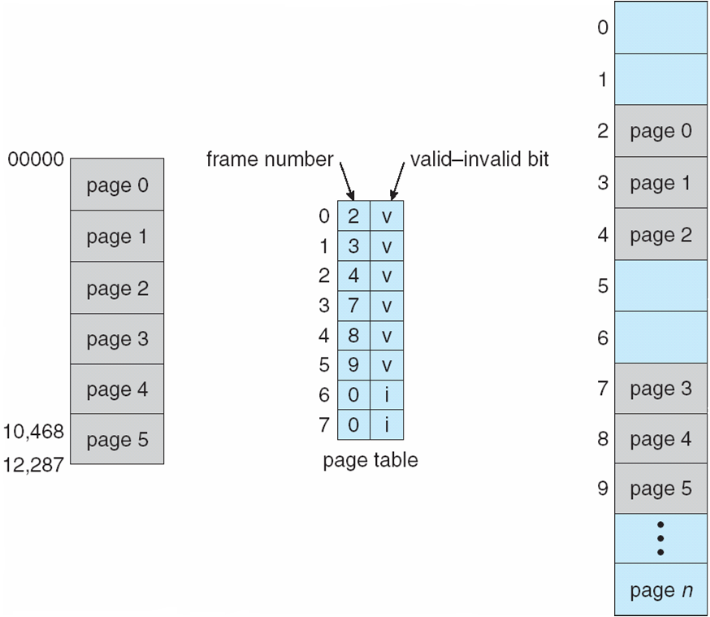
Şekildeki ince nokta (sayılar şekilde, açıklama OSC kitabından, ek bilgi): program 0–10468 arasını kullanıyor. ⌈10469 / 2048⌉ = 6 sayfa (0–5) geçerli. Son geçerli adres 6 × 2048 − 1 = 12287. 10469–12287 arasını program kullanmıyor, ama sayfa 5 geçerli olduğu için bu erişimler yakalanmaz. Koruma sayfa ayrıntısındadır (granularity).
OSC koruma bitini "each frame" ile ilişkilendirir OSC ch9 sl. 35. Hoca "Permissions belong to the relevant mapping" der sl. 43. Bitler PTE'de durur, yani eşleme başınadır. Aynı çerçeve iki eşlemede farklı izinlere sahip olabilir. Sınavda hocanın ifadesini kullan.
7.2 Paylaşılan kod, özel veri sl. 42; OSC ch9 sl. 37–38#
Hoca sl. 42:
- "Different processes may map shared read-only code frames while retaining private writable data."
- "Sharing is implemented through mappings. It does not require the processes to share their entire address space."
- "Writable shared memory also needs a synchronization protocol; address translation does not prevent a data race."
OSC: salt okunur, yeniden girilebilir (reentrant) kodun tek kopyası süreçler arasında paylaşılır: metin editörleri, derleyiciler, pencere sistemleri. Özel kod ve veri her süreçte ayrıdır OSC ch9 sl. 37. Reentrant kod çalışırken kendini değiştirmez ek bilgi.

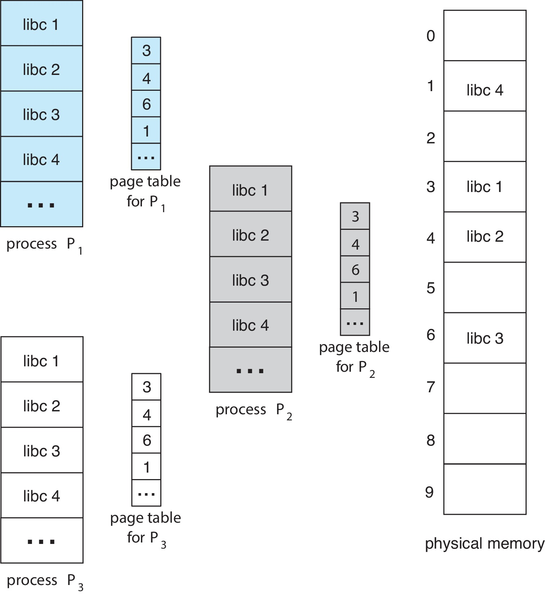
7.3 Alias: farklı sanal adres, aynı çerçeve sl. 43–44, 66–67; Okuma §12, §18#
Hoca sl. 43: "Process A maps virtual page 1 to frame 9; process B maps virtual page 7 to the same frame. Page size is 4096."
- A, 0x1234'ü okur: p = 1, d = 0x234 → frame 9 → 0x9234.
- B, 0x7234'ü okur: p = 7, d = 0x234 → frame 9 → 0x9234.
- "Equal virtual addresses can reach different frames; different virtual addresses can reach the same frame."
- "Permissions belong to the relevant mapping. A shared frame can have different access permissions through different mappings."
- "Both mappings reach the same byte. The access check uses the permissions of the mapping used by the process." sl. 44

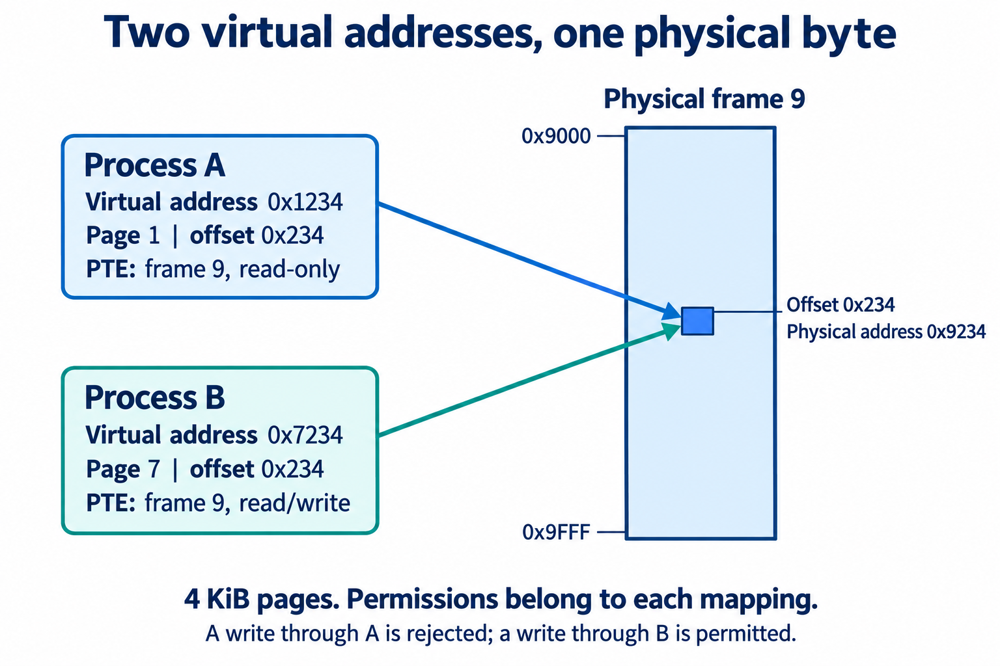
Entegre problem sl. 66–67. 4 KiB sayfa. A: sayfa 1 → frame 9, read-only. B: sayfa 7 → frame 9, read/write. İkisi de bellekte.
| Soru | Cevap |
|---|---|
| A'nın 0x1234 okuması nereye gider? | 0x9234; okuma izinli |
| A oraya yazabilir mi? | Hayır. A'nın eşlemesi salt okunur; TLB'de hit olsa bile reddedilir |
| B'nin 0x7234 yazması nereye gider? | 0x9234; izinli. "Read-only for A does not make the frame immutable to everyone." sl. 67 |
| A'nın TLB miss'i disk okuması gerektirir mi? | Hayır. "No disk read follows merely from a TLB miss; this example has a resident mapping." sl. 67 |
| B ve başka bir süreç aynı anda güncellerse? | "Synchronization is still needed for shared updates. Mapping permissions and race freedom are different obligations." sl. 67 |
Linux'ta nasıl görünür? /proc/PID/maps'te paylaşılan kütüphanenin kod satırları r-xp görünür. Sondaki p (private) bu eşlemenin özel (copy-on-write) olduğunu söyler; fiziksel çerçeveler yine de süreçler arasında paylaşılabilir ek bilgi. fork sonrası aynı sanal adres iki süreçte farklı değer tutabilir; bu makinede ölçüldü: &x iki süreçte de 0x102c4c000, çocukta x = 2, ebeveynde x = 1.
Tuzaklar.
- "Salt okunur eşleme çerçeveyi herkes için değiştirilemez yapar" yanlış sl. 67.
- "TLB hit izin denetimini atlar" yanlış. "Cached translations must retain or enforce the relevant permission information, so a TLB hit is not a way around protection." Okuma §12
- "Paylaşılan yazılabilir bellek sayaç güncellemesini güvenli yapar" yanlış; senkronizasyon gerekir Okuma §12.
Kontrol sorusu K12. A ve B iki farklı süreç, ikisi de 0x5000 adresini kullanıyor. A'nın sayfa 5'i frame 2'ye, B'nin sayfa 5'i frame 8'e eşli. Aynı veriyi mi okurlar? Aynı TLB'de iki çeviri birlikte durabilir mi, hangi koşulla?
8. Sayfa tablosu yapıları ve sayfa boyutu sl. 45–56#
8.1 Lineer tablo ne kadar büyük? sl. 45; OSC ch9 sl. 39#
- "A 32-bit byte address space with 4 KiB pages contains 2^20 virtual pages." sl. 45
- "At 4 bytes per PTE, a full linear table needs 2^22 bytes = 4 MiB per address space."
- "This includes entries for unmapped ranges. A process using only a few distant regions can still require a large linear table."
- "The key question is how to represent sparse mappings without allocating every possible entry."
Hesap: 2^32 / 2^12 = 2^20 = 1 048 576 girdi. × 4 bayt = 2^22 = 4 194 304 bayt = 4 MiB (1024 tane 4 KiB'lık sayfa). Ve bu alan bitişik olmalıdır: OSC "Don't want to allocate that contiguously in main memory" der OSC ch9 sl. 39. 100 süreç için 400 MiB yalnızca tablolara gider OSTEP 18.2.
Genel formül: lineer tablo = 2^(m − n) × PTE boyutu.
8.2 Hiyerarşik tablolar sl. 46–49; OSC ch9 sl. 40–42#
Hoca sl. 46:
- "Divide the page-table structure into smaller tables. An outer entry points to a lower-level table when that region is used."
- "An unused region can lack the lower-level table entirely. Sparse mappings can therefore save table memory."
- "A miss may need more dependent memory reads; the TLB reduces how often that walk is required."
OSC: "We then page the page table." OSC ch9 sl. 40 OSTEP üst seviyeye page directory der OSTEP 20.3.

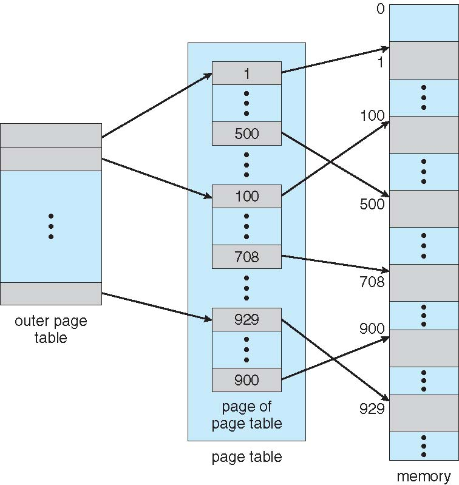
10/10/12 bölmesi nereden gelir? sl. 47 "Assume 32-bit addresses, 4 KiB pages, and 4-byte entries in both levels. Each table page holds 1024 entries."
- Offset: 4 KiB = 2^12 → 12 bit.
- Bir tablo sayfasındaki girdi: 4096 / 4 = 1024 = 2^10 → iç indeks 10 bit.
- Kalan: 32 − 12 − 10 = 10 bit → dış tablo 2^10 × 4 = 4 KiB, tam bir sayfa.
"These bit widths follow from the stated sizes. They are not universal constants." sl. 47
Yürüyüş kuralı sl. 48:
- "Use the outer index to select a pointer to an inner table; use the inner index to select the final frame."
- "Only after finding a permitted leaf mapping do we combine the frame with the offset."
- "Intermediate table addresses and the final data address play different roles. Label each arrow before calculating."
Sayısal yürüyüş: 0x00403004 sl. 49; Okuma §13. Kök tablo 0x1000'de, girdiler 4 bayt.
- Böl: 0x00403004 =
0000 0000 01 | 00 0000 0011 | 0000 0000 0100. Dış indeks 1, iç indeks 3, offset 4. - Kontrol: 0x00403004 >> 22 = 1. (0x00403004 >> 12) & 0x3FF = 0x403 & 0x3FF = 3. Ondalık: 4206596 = 1 × 2^22 + 12292; 12292 = 3 × 4096 + 4. - Dış girdi adresi: 0x1000 + 1 × 4 = 0x1004 → içerik: iç tablo 0x5000'de.
- İç girdi adresi: 0x5000 + 3 × 4 = 0x500C → içerik: frame 0xA.
- Veri adresi: 0xA × 4096 + 4 = 0xA004.
Dört ayrı adres: 0x1004 (dış girdinin adresi), 0x5000 (iç tablonun tabanı, dış girdinin içeriği), 0x500C (iç girdinin adresi), 0xA004 (veri). Bunları karıştırmak tipik hatadır sl. 48.
8.3 Seyrek tablo tasarrufu ve yürüyüş maliyeti sl. 50–51#
Hoca sl. 50: "Map pages in only three distinct outer-index regions. Assume one 4 KiB root and one 4 KiB leaf table per used region."
- Seyrek: (1 + 3) × 4 KiB = 16 KiB; lineer tablonun 4 MiB'ına göre 1/256.
- Dolu: her dış bölgenin yaprağı varsa 1 + 1024 = 1025 tablo sayfası = 4100 KiB. Lineer tablo 1024 sayfa = 4096 KiB. Hiyerarşi 4 KiB daha büyük.
- "Savings depend on sparsity. A hierarchy is not automatically smaller for every mapping pattern."
Okumanın sorusu: bir sayfa daha eşlemek her zaman yeni yaprak tablo ister mi? Hayır. Sayfanın dış bölgesinin yaprağı zaten varsa o tablonun boş bir girdisi kullanılır. Her dış bölge 1024 × 4 KiB = 4 MiB sanal alanı kapsar Okuma §13.
Yürüyüş maliyeti sl. 51: k seviyede miss = k PTE okuması + 1 veri erişimi. EAT formülü §6.6'da.
8.4 64 bitlik uzay sl. 52–53, 73; OSC ch9 sl. 43–44#
- "A hypothetical full 64-bit virtual space with 4 KiB pages has 2^52 possible page entries. A flat table is impractical." sl. 52
- "The figure is an arithmetic model of a large address space, not a specification for every 64-bit CPU."
- "Implemented virtual and physical widths can be smaller than the register width."
- "Extra levels allow large unused ranges to remain unallocated. They also increase uncached walk depth." sl. 53
- "A large-page leaf may terminate a walk earlier on architectures that support it." sl. 53
OSC modeliyle (4 baytlık girdi) hesaplar:
| Bölme | En dış tablo | Boyut |
|---|---|---|
| Düz tablo | 2^52 girdi | 2^52 × 4 = 2^54 bayt = 16 PiB |
| İki seviye 42 / 10 / 12 | 2^42 girdi | 2^44 bayt = 16 TiB OSC ch9 sl. 43; sl. 73 |
| Üç seviye 32 / 10 / 10 / 12 | 2^32 girdi | 2^34 bayt = 16 GiB OSC ch9 sl. 43 |
OSC üç seviye için bile "possibly 4 memory access to get to one physical memory location" der (3 tablo + 1 veri) OSC ch9 sl. 43.

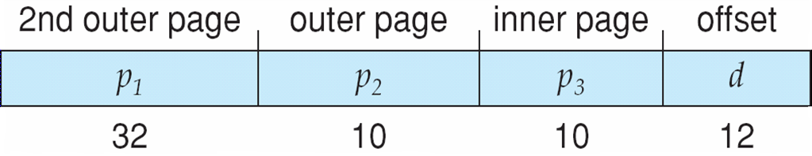
Kaç seviye gerekir? ek bilgi, OSTEP 20'deki mantık Her tablo parçası bir sayfaya sığsın. Seviye başına bit = log2(sayfa / PTE boyutu); seviye sayısı = ⌈(m − n) / bu değer⌉. 48 bit, 4 KiB, 8 baytlık girdi: (48 − 12) / 9 = 4 seviye → 9/9/9/9/12 (x86-64).
8.5 Hashed page table sl. 54; OSC ch9 sl. 45–46#
Hoca sl. 54:
- "Hash the virtual page number to find a candidate chain. Compare the key before accepting a mapping; collisions are possible."
- "The key must distinguish address spaces when a structure is shared across processes."
- "Hashing is another representation trade-off. It is not the hierarchy used by every operating system."
Mekanizma OSC ch9 sl. 45:
- VPN'i hash'le → kova (bucket).
- Zinciri dolaş. Her eleman: VPN, frame, sonraki eleman.
- Elemanın VPN'i arananla eşleşirse frame'i al, offset'i ekle. Eşleşmezse sonrakine geç. Zincir biterse eşleme yok.
OSC: 32 bitten büyük uzaylarda yaygındır. Clustered page table: her girdi birkaç sayfayı (ör. 16) temsil eder; seyrek uzaylarda işe yarar OSC ch9 sl. 45.

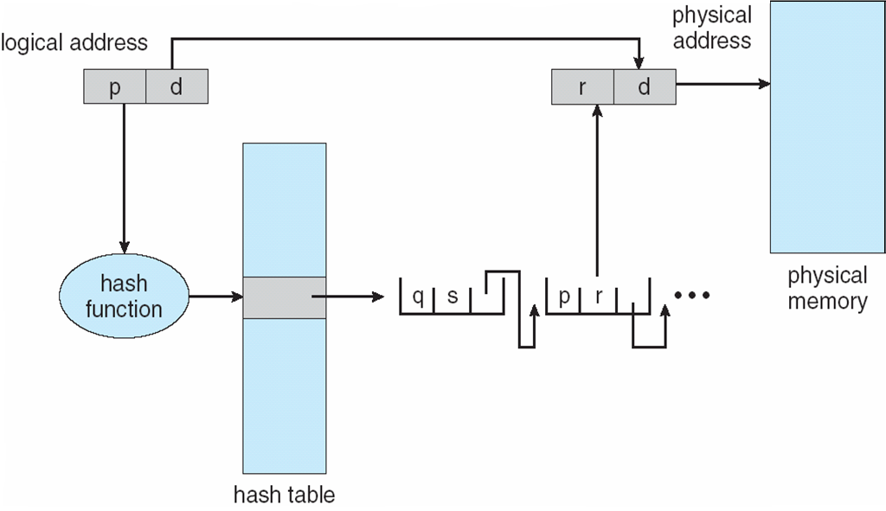
8.6 Inverted page table sl. 55; Okuma §14; OSC ch9 sl. 47–48#
Hoca sl. 55:
- "An inverted table organizes entries around physical frames, including information identifying the owning virtual mapping."
- "This can reduce storage tied to the virtual address range, but finding a mapping requires an efficient search mechanism."
- "Shared frames complicate a simple one-entry/one-owner model. TLBs can still accelerate repeated translations."
Mekanizma OSC ch9 sl. 47–48: sistemde tek tablo vardır ve her fiziksel çerçeve için bir girdi tutar:
- Boyut fiziksel bellekle orantılıdır; sanal uzayla ya da süreç sayısıyla değil. Örnek ek bilgi: 4 GiB RAM, 4 KiB çerçeve → 2^20 girdi; 8 baytlık girdiyle 8 MiB, bütün sistem için.
- Bedel arama süresidir. OSC çözümü: aramayı bir ya da birkaç girdiyle sınırlamak için hash tablosu; TLB de hızlandırır OSC ch9 sl. 47.
- Paylaşım sorunu: bir çerçevenin tek

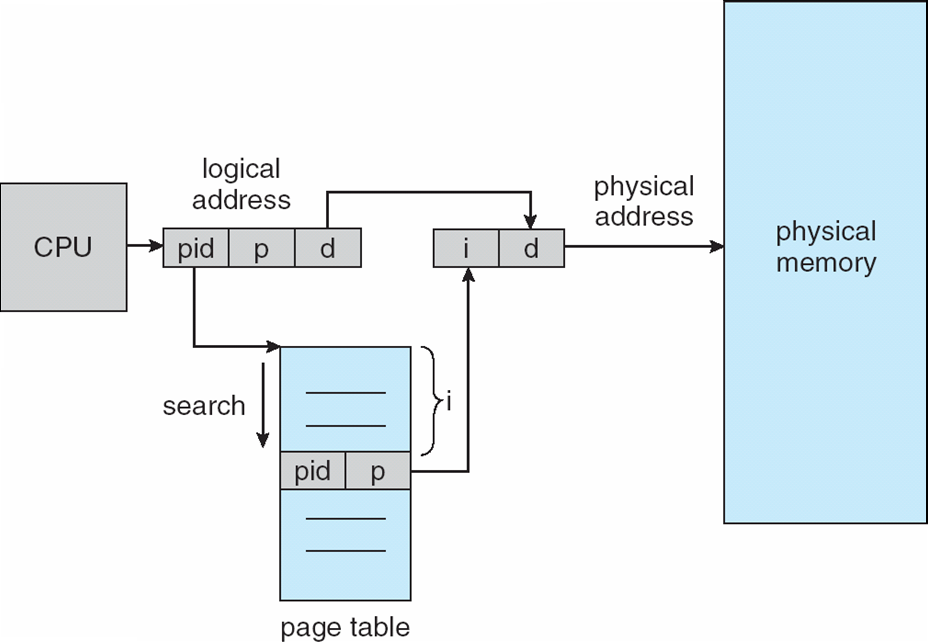
8.7 Sayfa boyutu bir takastır sl. 56; OSC ch9 sl. 28#
Hoca sl. 56:
- "Larger pages can reduce table entries and increase the bytes covered by a fixed number of TLB entries."
- "Smaller pages can reduce unused space and provide finer allocation/protection granularity."
- "For a toy TLB with 64 entries: 4 KiB pages cover 256 KiB; 2 MiB pages cover 128 MiB."
- "This nominal reach is not a guarantee of hits. Associativity, page-size support and access patterns matter."
| Büyük sayfa | Küçük sayfa | |
|---|---|---|
| Sayfa tablosu girdisi | az | çok |
| TLB kapsamı (reach) | büyük | küçük |
| İç parçalanma | fazla | az |
| Koruma ve ayırma ayrıntısı | kaba | ince |
TLB kapsamı = girdi sayısı × sayfa boyutu: 64 × 4 KiB = 2^18 = 256 KiB; 64 × 2 MiB = 2^27 = 128 MiB. "TLB reach" terimi OSC ch9 slaytlarında yok; hoca "nominal reach", OSTEP "TLB coverage" der.
Kontrol sorusu K13. 32 bit adres, 4 KiB sayfa, 4 baytlık girdi, iki seviye (10/10/12). Kök 0x3000'de. VA 0x0080_5ABC için dış ve iç indeks, offset ve dış girdinin adresi ne? Dış girdi iç tabloyu 0x9000'de gösteriyorsa iç girdinin adresi ne?
Kontrol sorusu K14. Bir süreç yalnızca iki sayfa kullanıyor: 0x00000000 ve 0xFFFFF000. Lineer tablo ve iki seviyeli tablo kaç bayt tutar? Aynı süreç bütün 4 GiB'ı eşlese hangisi daha küçüktür?
9. Linux sayfa tablosu seviyeleri ve tarihsel mimariler sl. 57–58, 70–81#
9.1 Linux: PGD, P4D, PUD, PMD, PTE sl. 57; Okuma §15#
Hoca sl. 57:
- "Linux represents a hierarchy named PGD, P4D, PUD, PMD and PTE. Levels unused by a supported architecture can be folded."
- "Therefore 'Linux always performs five physical lookups' is not a valid conclusion from the five software names."
- "The address width, enabled paging mode, page size and leaf type determine the relevant hardware walk."
- "Use architecture documentation and the actual machine configuration when making implementation claims."
Adlar ve 4 seviyeli x86-64 karşılıkları (ek bilgi; kaynak hocanın verdiği Linux page tables belgesi):
| Bitler | Intel adı | Linux adı | Açılım |
|---|---|---|---|
| 47–39 | PML4 | PGD | Page Global Directory |
| — | — | P4D | 5 seviyeli kipteki ek dizin; 4 seviyede katlanmış |
| 38–30 | PDPT | PUD | Page Upper Directory |
| 29–21 | PD | PMD | Page Middle Directory |
| 20–12 | PT | PTE | Page Table Entry |
| 11–0 | offset | offset |
Neden 9 bit? 4 KiB'lık tablo sayfasına 8 baytlık girdiden 4096 / 8 = 512 = 2^9 tane sığar. 48 − 12 = 36 = 4 × 9. Kökün fiziksel adresi CR3 register'ındadır; bu, PTBR'nin x86 karşılığıdır ek bilgi.
Adım adım örnek (ek bilgi; temsilî bir Ubuntu yığın adresi 0x7ffd5e8c3a4c, aritmetik bu makinede doğrulandı):
- Kanonik mi? 48 bit modelde bit 63–48, bit 47'nin kopyası olmalı. Bit 47 = 0 ve üst 16 bit 0 → kanonik, kullanıcı yarısı.
- 48 biti 9/9/9/9/12 diye kes:
011111111 | 111110101 | 011110100 | 011000011 | 101001001100. - PGD = 255, PUD = 501, PMD = 244, PTE = 195, offset = 0xA4C.
- Yürüyüş: CR3 → PGD[255] → PUD[501] → PMD[244] → PT[195] → frame f → PA = f × 4096 + 0xA4C.
- TLB miss maliyeti (model): 4 PTE okuması + 1 veri = 5 bellek erişimi sl. 51'in k = 4 hâli.
Aynı 0x00403004, 10/10/12'de dış = 1, iç = 3 veriyordu. 9/9/9/9/12'de PMD = 2, PTE = 3, offset = 4 verir. Aynı adres, farklı bölme: bit genişlikleri boyutlardan türer sl. 47.
Büyük sayfa ek bilgi: 2 MiB'lık sayfada PMD girdisi yapraktır, yürüyüş 3 seviyede biter, offset 21 bit. 1 GiB'lık sayfada PUD girdisi yapraktır, offset 30 bit. Hocanın "a large-page leaf may terminate a walk earlier" dediği budur sl. 53. 5 seviyeli kipte (LA57, 57 bit sanal adres) P4D gerçek bir seviye olur.
9.2 Tarihsel mimariler sl. 58, 70, 74–81; OSC ch9 sl. 58–66#
Hocanın çerçevesi sl. 58, 70:
- "IA-32 examples combine segmentation and paging. They help separate logical, linear and physical addresses."
- "Keep legacy Solaris and ARM examples identified as historical case studies. Do not present their page sizes or table levels as universal today."
- "Intel 64 / x86-64 should not be confused with the separate IA-64 architecture. The source terminology needs care."
OSC ch9 sl. 58 "Current Intel CPUs are 64-bit and called IA-64 architecture" der. Bu yanlıştır; hoca düzeltiyor. IA-64 Itanium'dur. Sınavda "IA-64" deme.
| Model | Özet | Kaynak |
|---|---|---|
| IA-32 selector | 16 bit = 13 bit index + 1 bit tablo seçimi (GDT/LDT) + 2 bit ayrıcalık. 2^13 = 8K girdi her tabloda → 16K segment | sl. 74; OSC ch9 sl. 59–60 |
| IA-32 aşamaları | logical → segmentation → linear → paging → physical | sl. 76–77 |
| IA-32 paging | 10/10/12, kök CR3'te. 4 MB'lık sayfada directory girdisi doğrudan sayfaya gider, offset 22 bit | sl. 75, 78 |
| PAE | 2/9/9/12, üç seviye; 64 bitlik girdi → 512 girdi → 9 bit. Fiziksel adres 36 bit = 64 GiB. "A process still uses a 32-bit linear address." | sl. 79; OSC ch9 sl. 64 |
| x86-64 | 48 bit uygulanır, 9/9/9/9/12, 4 KB / 2 MB / 1 GB sayfa. "The upper bits must satisfy canonical-address rules; this is not a universal current limit." | sl. 80; OSC ch9 sl. 65 |
| ARM (tarihsel) | 4 KB ve 16 KB sayfa iki seviyeyle; 1 MB ve 16 MB section tek seviyeyle (direct section mapping). İki seviye TLB: micro-TLB'ler ve main TLB | sl. 81; OSC ch9 sl. 66 |

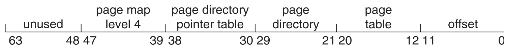
Okumanın PAE sorusu: PAE 32 bitlik bir süreci 36 bitlik linear adresli yapar mı? Hayır. Fiziksel adres kapasitesi büyür; linear adres 32 bit kalır. "Address width must always be identified as virtual, linear or physical before comparing numbers." Okuma §17
ARM şekli için not: OSC ch9 sl. 66'nın "inner" ve "outer" etiketleri kendi içinde tutarsız. Bu etiketleri kullanma; sırayı adlarıyla söyle: önce micro-TLB'ler (veri ve komut ayrı), sonra main TLB, ikisi de miss verirse donanım tabloyu yürür ek bilgi. Hoca bu sırayı slaytına almamış.
Kontrol sorusu K15. "Linux'ta PGD, P4D, PUD, PMD ve PTE var; o hâlde her TLB miss'te beş tablo okuması yapılır." Bu cümle neden geçersiz? İki nedeni yaz.
10. Swapping ve 6. haftaya köprü sl. 59–60; OSC ch9 sl. 51–57#
Hoca sl. 59:
- "The historical model transfers a process image between memory and backing store. Address binding determines whether it can return at another location."
- "Moving an entire image has a cost proportional to transferred bytes, plus device and software overhead."
- "Do not equate this model with every contemporary use of the word swap."

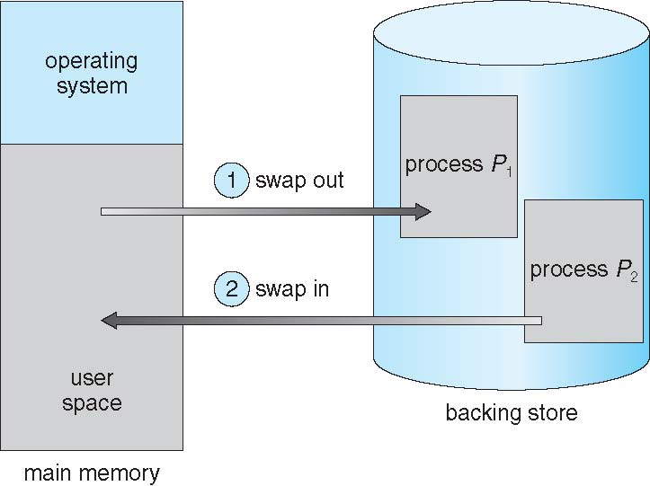
Bağlama ile ilişki OSC ch9 sl. 52: compile-time ya da load-time bağlamada süreç aynı fiziksel yere dönmek zorundadır. Execution-time bağlamada başka yere dönebilir; yalnızca relocation değişir sl. 9.
Sayısal örnek OSC ch9 sl. 54: 100 MB'lık süreç, 50 MB/s disk. Swap out 100 / 50 = 2 s = 2000 ms; aynı boyutta sürecin swap in'i 2000 ms; toplam 4 s. OSC yalnızca aktarım süresini sayar; hocanın cümlesi aygıt ve yazılım yükünü de ekler.
OSC [ch9 sl. 55–56]:
- Bekleyen I/O'su olan süreç takas edilemez, ya da I/O kernel tamponlarından yapılır (double buffering, ek yük).
- "Standard swapping not used in modern operating systems. But modified version common. Swap only when free memory extremely low."
- Mobil sistemler genelde takas desteklemez: flash'ta alan az, yazma döngüsü sınırlı. iOS uygulamadan belleği gönüllü bırakmasını ister; Android durumu flash'a yazıp uygulamayı sonlandırır.
Sayfa düzeyinde taşıma sl. 60:
- "Page-level backing allows some virtual pages to be absent from physical memory while others remain resident."
- "Address translation identifies the requested page and its state. A fault handler may need to supply a frame before retrying."
- "Week 6 develops demand paging, replacement, copy-on-write, locality and thrashing. Today's tables and checks are the foundation."

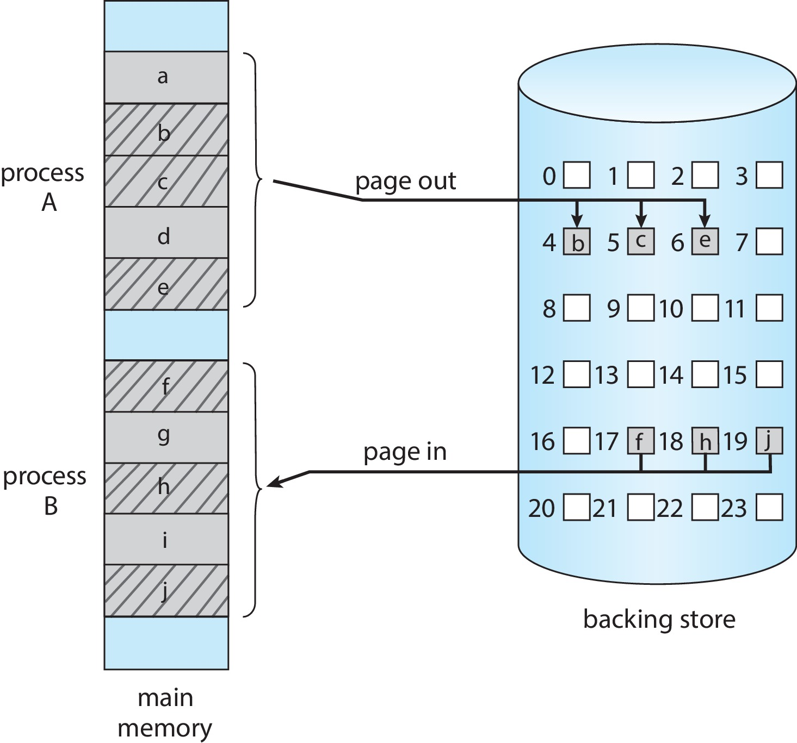
Tuzak. Linux'taki swap (swap bölümü ya da dosyası) sayfa düzeyindedir. Onu bütün süreç takasıyla eşitlemek yanlış sl. 59.
Kontrol sorusu K16. Bir süreç load-time bağlamayla yüklenmiş ve takas edilmiş. Geri gelirken neden başka bir boş bölgeye konamaz? Execution-time bağlamada ne değişir?
11. Ubuntu'da süreç incelemek ve çeviri simülatörü sl. 61–68; Okuma §15–16, §18#
11.1 address-view.c ve /proc maps sl. 61–63#
Program sürecin PID'ini, sayfa boyutunu (sysconf(_SC_PAGESIZE)) ve üç nesnenin adresini basar: statik (global_value), otomatik (yığındaki local_value) ve malloc ile ayrılmış. Linux'ta ardından kendi /proc/self/maps dosyasını basar sl. 61. self sayesinde basılan pointer'lar ve harita aynı sürece aittir; başka bir komutla cat /proc/self/maps yazsaydın cat'in haritasını görürdün Okuma §16.
Derleme sl. 62:
cc -std=c11 -Wall -Wextra -Werror -O2 address-view.c -o address-view
./address-view
./address-view
Hoca sl. 62: "Run twice and compare addresses and mapping ranges. Record the machine, compiler and page size." "Do not infer a physical frame number from a printed pointer or /proc maps." Slayt kayıt için uname -a ve cc --version da çalıştırır. Bu pratik isteğe bağlıdır; notlu bir teslim yoktur sl. 61.
Maps satırını doğru soruyla oku sl. 63; Okuma §15. Bir maps satırı şunları söyler:
5603a7ea0000-5603a7ea1000 rw-p 00003000 08:02 1835123 /home/emre/address-view
| Alan | Anlamı |
|---|---|
5603a7ea0000-5603a7ea1000 |
sanal aralık; bitiş adresi dahil değil |
rw-p |
izinler; p özel (private), s paylaşılan (shared) |
00003000 |
dosya içi offset |
08:02 1835123 |
aygıt ve inode |
| yol | dosya ya da [heap], [stack], [vdso] |
Okumanın örneği: 00400000-00402000 = 0x2000 = 8192 bayt = iki 4 KiB'lık sayfa; son bayt 0x00401FFF Okuma §15.
Maps "hangi sanal aralıklar hangi izinlerle tanımlı?" sorusunu cevaplar. Şunları cevaplamaz sl. 63:
- Aralıktaki her sayfa bellekte mi (residency)?
- Hangi fiziksel çerçevede?
- TLB'de mi?
- Her
malloc[heap]bölgesinde mi? Hayır: allocator ve istek boyutu sonucu değiştirir (glibc'de büyük istekler ayrımmapile karşılanır, ek bilgi).
Bu makinede ne ölçüldü? (macOS, Apple M4) /proc yok, address-view'ın Linux dalı derlenmiyor. Ölçülenler:
- Sayfa boyutu 16384.
- Adresler her çalıştırmada değişiyor (ASLR), ama sayfa içi offset sabit kalıyor, çünkü ASLR sanal tabanı sayfa katları kadar kaydırır. Bu bir yerleşim (layout) olgusudur, çeviri değil: basılan değerlerin hepsi sanaldır ve çerçeve hakkında bilgi vermez sl. 62. Sl. 26'daki "sayfa değişir, offset kalır" ise sanaldan fiziksele çeviriyi anlatır; ikisini karıştırma.
vmmapile: 1 MiB'lıkmallocayrı ve uzak bir bölgeye düştü; 4 MiB eşli bölgenin yalnız 16 KiB'ı bellekte. Bu, sl. 63'ün iki noktasının doğrudan kanıtı: hermalloctek bir heap'te değil, eşleme yerleşiklik demek değil.- Linux'a özgü hiçbir şey (maps satırları,
pmap,setarch -R) burada doğrulanmadı.
11.2 translate.c: tahmin et, çalıştır, açıkla sl. 64–65; Okuma §16#
"translate.c uses the four-page table from the lecture, 4 KiB pages, a two-entry LRU TLB and explicit permissions. It prints page number, offset, hit/miss and either the physical result or a named rejection." sl. 64 "This is a model, not a tool for reading the host's physical page tables." sl. 64 Yalnızca başarılı erişimler TLB'yi ve LRU sırasını günceller; reddedilen erişim TLB'ye dokunmaz.
Önce elle hesapla, sonra çalıştır sl. 65. Bu makinede iki derleme bayrağıyla da aynı çıktı alındı:
R VA=0x0FFF page=0 offset=4095 TLB=MISS frame=3 PA=0x3FFF
R VA=0x1000 page=1 offset=0 TLB=MISS frame=9 PA=0x9000
R VA=0x0001 page=0 offset=1 TLB=HIT frame=3 PA=0x3001
R VA=0x3000 page=3 offset=0 TLB=MISS frame=1 PA=0x1000
R VA=0x1234 page=1 offset=564 TLB=MISS frame=9 PA=0x9234
W VA=0x1234 page=1 offset=564 TLB=HIT PROTECTION
R VA=0x2000 page=2 offset=0 UNMAPPED
R VA=0x4000 page=4 offset=0 UNMAPPED
| # | Erişim | TLB önce | Sonuç | TLB sonra (LRU → MRU) |
|---|---|---|---|---|
| 1 | R 0x0FFF | [ ] | miss | [0] |
| 2 | R 0x1000 | [0] | miss | [0, 1] |
| 3 | R 0x0001 | [0, 1] | hit | [1, 0] |
| 4 | R 0x3000 | [1, 0] | miss, 1 atılır | [0, 3] |
| 5 | R 0x1234 | [0, 3] | miss, 0 atılır | [3, 1] |
| 6 | W 0x1234 | [3, 1] | hit ama protection | [3, 1] |
| 7 | R 0x2000 | [3, 1] | unmapped | [3, 1] |
| 8 | R 0x4000 | [3, 1] | unmapped (tablo dışı) | [3, 1] |
Hoca sl. 64: "Read 0x1234, then write it: a cached translation must still enforce read-only protection."
Dikkat edilecek üç nokta:
- Simülatörün başarılı sayfa dizisi 0, 1, 0, 3, 1'dir; sl. 36'daki dizi 0, 1, 0, 2, 1. Desen aynı (M M H M M), çünkü simülatörün tablosunda sayfa 2 eşli değil Okuma §10.
- Program önce sayfa tablosuna, sonra TLB'ye bakıyor; gerçek donanım önce TLB'ye bakar. Tablo sabit olduğu için sonuç değişmez, ama bu model bayat (stale) TLB girdisini gösteremez ek bilgi.
- 0x4000 tablonun dışındadır (sayfa 4); program bunu da UNMAPPED diye etiketler. Gerçek sistemde bu PTLR denetimine benzer.
Okumanın uzatması Okuma §16: sayfa 1'in çerçevesini 9'dan 5'e değiştir. 0x1234 okuması 0x5234'e gider. Yalnızca çerçeve bitleri (15–12) değişir; offset bitleri ve hit/miss deseni aynı kalır; yazma hâlâ reddedilir. Bu makinede çalıştırıldı, sonuç aynı.
11.3 Ezberlemeden açıklanacaklar sl. 66–68; Okuma §18#
Entegre problem §7.3'te. Hocanın kapanış listesi sl. 68:
- "Derive page number, offset and physical address from the stated sizes. Keep PTE addresses separate from data addresses."
- "Explain why isolation and sharing can coexist, and why a TLB hit does not bypass permissions."
- "Calculate table storage and access cost under explicit assumptions; identify where real hardware adds complexity."
- "Distinguish virtual-space validity, residency and cached translation. Carry that distinction into Week 6."
Okumanın dört yanılgısı Okuma §18: PTE adresi veri adresi değildir; TLB miss bir sayfa yükleme (page-in) değildir; sanal pointer çerçeveyi göstermez; hiyerarşi her eşleme deseninde tasarruf sağlamaz.
Kontrol sorusu K17. translate.c'de 6. ve 7. satırın sırasını değiştirip önce R 0x2000, sonra W 0x1234 yapsan son TLB içeriği ve çıktılar değişir mi? Neden?
Ek: Ubuntu'da denenecek küçük deneyler (önce tahmin et, sonra çalıştır)#
Kod dosyaları materyaller/Ders-05_Memory-management/kod/ altında. Hepsi Ubuntu (x86-64) için. Burada (macOS) yalnızca taşınabilir kısımlar koşturuldu; Linux'a özgü her beklenti doğrulanmadı. Kayıt için önce şunları yaz:
uname -a; cc --version; getconf PAGESIZE; cat /proc/sys/kernel/randomize_va_space
D1. İki çalıştırma sl. 61–62. Tahmin: hangi adresler değişecek, hangi bitler aynı kalacak?
cc -std=c11 -Wall -Wextra -Werror -O2 address-view.c -o address-view
./address-view > run1.txt; ./address-view > run2.txt; diff run1.txt run2.txt
Beklenen: PID, adresler ve maps aralıkları değişir (ASLR). Statik ve heap adreslerinin alt 12 biti sabit kalır. Linux yığına ayrıca sayfa altı bir kaydırma da ekleyebilir ek bilgi. Her pointer'ı maps'te bir satıra yerleştir: statik nesne ikilinin rw-p satırında, otomatik nesne [stack]'te, küçük malloc [heap]'te.
D2. ASLR'yi kapat ek bilgi:
setarch -R ./address-view > a.txt; setarch -R ./address-view > b.txt; diff a.txt b.txt
Beklenen: yalnızca PID satırı farklı. Sabit sanal adres sabit fiziksel çerçeve demek değildir.
D3. Canlı süreci dışarıdan incele ek bilgi. address-view'a sona bir sleep(60); ekleyip arka planda çalıştır:
./address-view-wait & P=$!; cat /proc/$P/maps; pmap -x $P; kill $P
pmap -x her eşlemenin şu an kaç KiB'ının bellekte (RSS) olduğunu gösterir; maps göstermez.
D4. Simülatör sl. 64–65. Önce §11.2 tablosunu elle doldur, sonra:
cc -std=c11 -Wall -Wextra -Werror -O2 translate.c -o translate && ./translate
Beklenen: §11.2'deki sekiz satır, birebir. Sonra sayfa 1'in çerçevesini 5 yap ve tekrar tahmin et.
D5. Unmapped ve protection'ın gerçek karşılığı ek bilgi. mmap ile iki sayfa ayır, yaz, mprotect(PROT_READ) yap, tekrar yaz; ikinci sayfayı munmap edip oku. Linux'ta beklenen: ikisi de SIGSEGV; izin ihlalinde si_code = SEGV_ACCERR, eşlenmemiş adreste SEGV_MAPERR. Bu, translate.c'deki PROTECTION ve UNMAPPED ayrımının karşılığıdır sl. 28. macOS'ta ölçülen farklı: izin ihlali SIGBUS, eşlenmemiş adres SIGSEGV. Sinyal adlarını platformlar arasında genelleme.
D6. fork sonrası aynı adres, farklı veri sl. 31, 43:
int x = 1; pid_t pid = fork();
if (pid == 0) { x = 2; printf("cocuk &x=%p x=%d\n", (void *)&x, x); return 0; }
waitpid(pid, NULL, 0); printf("ebeveyn &x=%p x=%d\n", (void *)&x, x);
Beklenen: iki satırda &x aynı, değer farklı. Bu makinede ölçüldü. Yazınca çerçevenin ayrılması copy-on-write'tır; Hafta 6.
D7. Eşleme yerleşiklik değildir ek bilgi. 64 sayfa mmap et, mincore ile say, iki sayfaya yaz, tekrar say. Bu makinede: önce 0/64, sonra 2/64 sayfa bellekte. Maps'te 64 sayfa tek bir rw-p satırıdır.